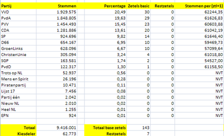
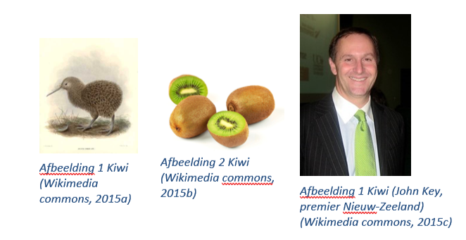

Les 1 - Lesprogramma (L1)
Opgave L1.1 - Delen
Individueel, programmeervaardigheid
L1.1 A
Wanneer je twee gehele getallen door elkaar deelt, krijg je niet automatisch een kommagetal, terwijl dat soms wel wenselijk is.
Bijvoorbeeld:
println(5 / 2);
levert 2 op, terwijl het handig kan zijn dat er 2.5 uit zou komen.
Maak een functie, floatDelen, die twee gehele getallen heeft als invoer. De functie deelt het eerste getal door het tweede getal en retourneert het resultaat als een kommagetal.
L1.1 B
Test het programma door in het hoofdprogramma de functie een paar keer aan te roepen, het resultaat naar het scherm te schrijven en te kijken of het resultaat op het scherm overeen komt met het resultaat dat je verwacht.
Tags: datatypes, testen, methodeaanroep <> methodedefinitie, parameters, argumenten, returnwaarden, functie, methode
Opgave L1.2 - Globaal delen
Klassikaal, discussie, begrip
Gegeven onderstaande oplossing:
int getal1, getal2;
float resultaat;
void setup() {
getal1 = 5;
getal2 = 2;
floatDelen();
println(resultaat);
}
void floatDelen() {
float f1 = (float)getal1;
float f2 = (float)getal2;
resultaat = f1 / f2;
}
Bovenstaande oplossing werkt wel, maar is niet ideaal. Geef een nadeel van deze uitwerking.
Tags: globale variabelen <> lokale variabelen, returnwaarden, parameters, argumenten
Opgave L1.3 - Delen door nul
Klassikaal, discussie, begrip
Onderstaande programma's veroorzaken drie verschillende foutmeldingen:
L1.3 A
void setup() {
println(floatDelen(5, 2);
}
L1.3 B
void setup() {
println(floatDelen(5, 2.0));
}
L1.3 C
void setup() {
println(1 / 0);
}
Hoewel er drie verschillende fouten worden veroorzaakt, kun je deze drie fouten in twee [soorten]{.ul} onderverdelen. Welke twee fouten horen bij dezelfde soort en welke fout is van de andere soort. Waarom kies je voor deze indeling? Verzin een passende naam voor beide soorten foutmelding
Tags: runtime, delen door 0, syntax, compile-time, datatypes, statische types
Opgave L1.4 - Zoeken in een array
Individueel, programmeervaardigheid
De functie komtGetalVoorIn(int getal, int[] lijst) retourneert true als getal voorkomt in lijst. Als getal niet voorkomt in lijst, dan wordt er false geretourneerd.
L1.4 A
Maak eerst een programma waarmee je de functie komtGetalVoorIn kunt testen:
- Verzin waarden voor de twee parameters van de functie waarvan je de uitkomst van de functieaanroep uit het hoofd kunt bepalen.
- Roep de functie aan in
setupvan processing (zonder de functie te definiëren). - Schrijf het resultaat van deze functieaanroep naar de console en controleer of je de foutmelding krijgt die aangeeft dat de functie nog niet bestaat.
L1.4 B
Implementeer de functie komtGetalVoorIn en controleer of het testresultaat overeenkomt met wat je verwacht.
L1.4 C
Klassikaal, testen
Wanneer is een test goed?
Tags: testen (eerst), array, testen, methodeaanroep <> methodedefinitie, return
Opgave L1.5 - doeFunctie
Klassikaal, codebegrip
Gegeven onderstaande code waarin een functie voorkomt met een onbruikbare functienaam.
int[][] hetVeld = {
{1, 6, 3},
{3, 2, 9},
};
void setup() {
println(doeFunctie(hetVeld, 1));
}
int doeFunctie(int[][] a, int b) {
int c = 0;
int[] d = a[b];
for (int i = 0; i < d.length; i++) {
c += d[i];
}
return c;
}
L1.5 A
Loop de functie, doeFunctie, regel voor regel door en houd bij welke variabelen er zijn en wat de waarde van elke variabele is (in feite speel je nu zelf de runtime omgeving na). Probeer er op deze manier te achter te komen wat de functie doet.
L1.5 B
Verander in de aanroep van doeFunctie het tweede argument in 2 (ipv 1). Welk soort foutmelding krijg je nu? Wat betekent de foutmelding?
L1.5 C
Als je de variabele a, b, c of d zou aanroepen in setup, dan gaat dit mis. Andersom (hetVeld aanroepen in doeFunctie) gaat wel goed. Hoe komt dit? Geef in de runtime administratie die je bij opgave A hebt gemaakt aan welke variabelen bij welke functie horen.
L1.5 D
Bedenk betere namen voor de functie en variabelen, zodat meteen duidelijk wordt wat de functie doet zonder 'de runtime omgeving na te spelen'
Tags: runtime <> compile-time, stap voor stap doorlopen, runtime administratie, runtime omgeving, ArrayIndexOutOfBoundsException, Exception, locale variabele
Opgave L1.6 - doeKeerTwee
Tweetallen, begrip
int testGetal = 5;
int[] testGetallen = {5, 5};
void setup() {
doeKeerTwee(testGetal);
doeKeerTwee(testGetallen);
println(testGetal);
println(testGetallen);
}
void doeKeerTwee(int getal) {
getal = 2 * getal;
}
void doeKeerTwee(int[] getallen) {
for (int i = 0; i < getallen.length; i++) {
getallen[i] = 2 * getallen[i];
}
}
Voer dit programma uit en bekijk de uitvoer. Vergelijk de waarde van het testGetal met de waarde in testGetallen. Wat is het belangrijkste verschil?
In de eerstvolgende les besteden we aandacht aan dit verschil.
Tags: referentietypes, primitieve types, runtime administratie, overloading
Extra Oefeningen
Opgave L1.7 Arrays bouwen
Programmeervaardigheid
L1.7 A - getallen uit twee arrays bij elkaar optellen
Maak de methode telElementenOp die twee integer arrays als invoer heeft. De methode telt de getallen van elk element uit beide arrays bij elkaar op en slaat de resultaten op in een nieuwe array. Vervolgens retourneert de methode de nieuwe array.
Test deze methode in de setup-methode van processing.
Hint: ga ervan uit dat beide arrays altijd dezelfde lengte hebben
Startcode:
int[] lijst1 = {1, 2, 3};
int[] lijst2 = {6, 4, 7};
void setup() {
println(telElementenOp(lijst1, lijst2));
}
//hieronder jouw implementatie van de methode
Output:
[0] 7
[1] 6
[2] 10
L1.7 B - maximum bepalen van twee arrays
Maak de methode maakMaxArray. Deze methode krijgt twee arrays als invoer, bepaalt de methode per element uit beide arrays het getal met de hoogste waarde en retourneert een nieuwe array met deze getallen.
Als één van beide arrays langer is dan de ander, dan moet het resultaat aangevuld worden met de elementen uit de langste array.
Test deze methode in de setup-methode van processing.
Startcode:
int[] lijst1 = {1, 2, 3};
int[] lijst2 = {0, 4, 3, 2};
void setup() {
println(maakMaxArray(lijst1, lijst2));
}
Output:
[0] 1
[1] 4
[2] 3
[3] 2
Les 2 - Voorbereiding (V2)
Theorie
Screencast onderwerp 1 het geheugenmodel
http://www.youtube.com/playlist?list=PLpd9jJvk1PjmtR_LDjx6Ao8ddS5Q_-30a
Opgave V2.1 - Geheugenmodel volgorde
Hieronder staan een aantal acties die in het geheugenmodel plaats kunnen vinden. Zet ze in de juiste volgorde.
a) Lokale variabelen een waarde geven.
b) Stack frame verwijderen.
c) Returnwaarde kopiëren.
d) Stack frame plaatsen.
e) Globale variabelen plaatsen.
f) Lokale variabelen plaatsen.
Tags: geheugenmodel, stack, stack frame, return
Opgave V2.2 - Pijl in het geheugenmodel
V2.2 A
Geef zo duidelijk mogelijk aan wat een pijl in het geheugenmodel precies betekent.
V2.2 B
Geef aan waar deze pijl precies moet beginnen en waar deze pijl precies naar wijst.
Tags: geheugenmodel, variabele, array, referentie, geheugenadres
Opgave V2.3 - Geheugenmodel van doeKeerTwee
V2.3 A
In onderstaande code is de functie doeKeerTwee gegeven:
01 int testGetal = 5;
02
03 void setup() {
04 doeKeerTwee(testGetal);
05 println(testGetal);
06 }
07
08 void doeKeerTwee(int getal) {
09 getal = 2 * getal;
10 }
Teken het geheugenmodel op het moment dat doeKeerTwee op regel 4 is uitgevoerd, maar het stack frame van deze functie nog niet is verwijderd.
V2.3 B
Hieronder staat de functie doeKeerTwee
01 int[] testGetallen = {5, 5};
02
03 void setup() {
04 doeKeerTwee(testGetallen);
05 println(testGetallen);
06 }
07
08 void doeKeerTwee(int[] getallen) {
09 for (int i = 0; i < getallen.length; i++) {
10 getallen[i] = 2 * getallen[i];
11 }
12 }
Teken het geheugenmodel op het moment dat doeKeerTwee op regel 4 is uitgevoerd, maar het stack frame van deze functie nog niet is verwijderd.
V2.3 C
Vergelijk de geheugenmodellen uit Onderdeel A en Onderdeel B met elkaar en verklaar aan de hand van deze modellen waardoor de globale variabele testGetal niet van waarde is veranderd, maar de variabele testGetallen wel.
Tags: stap voor stap doorlopen, geheugenmodel, referentievariabele, primitieve variabele, lokale variabele, globale variabele.
Les 2 - Lesprogramma (L2)
Opgave L2.1 - Length
Klassikaal, begrip
Gegeven onderstaand programma
01 int[] lijst = {23, 30, 67};
02 void setup() {
03 for (int i = 0; i < lijst.length; i++) {
04 println(lijst[i]);
05 }
06 }
Hieronder is het geheugenmodel te zien van het programma in de for-lus net na de aanroep van println op regel 5.
L2.1 A
Teken de variabele length met bijbehorende waarde op de juiste plek in dit model.
L2.1 B
Vergelijk de .-operator (in lijst.length) met de []-operator (lijst[i]). Wat is de overeenkomst tussen beide operatoren?
Tags: geheugenmodel, eigenschap, operatoren
Opgave L2.2 - PlakCodeVoor
Individueel en klassikaal, programmeerstijl, programmeervaardigheid
Gegeven onderstaande stuk code.
String[] idLijst = {"8b3", "4bf", "9h0"};
void setup() {
println(plakCodeVoorId(idLijst[0], "NL"));
}
String plakCodeVoorId(String id, String code) {
return code + id;
}
In de variabele idLijst staan drie strings die gebruikt worden voor identificaties. In het hoofdprogramma wordt de code "NL" voor het eerste id geplakt uit idLijst. Hiervoor wordt de functie plakCodeVoorId gebruikt.
L2.2 A
Ga ervan uit dat er een methode bestaat plakCodeVoorIdLijst(String[] lijst, String code) die de string in de variabele code voor elk element uit lijst plakt.
Schrijf een test in setup waarmee je deze methode zou kunnen testen. Zie opgave "Zoeken in Array" uit lesprogramma 1 voor de manier om een test op te zetten.
L2.2 B
Implementeer de methode plakCodeVoorIdLijst(String[] lijst, String code) en zorg ervoor dat je de test uit opgave A slaagt.
L2.2 C
Direct klassikaal, of eerst in tweetallen
Vergelijk jouw implementatie met die van anderen. Welke oplossing is het meest stijlvol en welke oplossing het minst?
L2.2 D
Direct klassikaal, of eerst in tweetallen
Had de methode plakCodeVoorIdLijst(String[] lijst, String code) ook plakCodeVoorId(String[] lijst, String code) kunnen heten zonder een foutmelding te krijgen?
Tags: referentievariabele, array, overloading, new, return, geheugenmodel
Opgave L2.3 - NotInitializedYet
Klassikaal, begrip
Voer onderstaand programma uit en je krijgt een foutmelding.
void setup() {
int[] deLijst;
deLijst[0] = 1;
println(deLijst);
}
Wat is de foutmelding? Is dit een runtimefout, of een compile-time foutmelding. Teken het geheugenmodel op het moment dat regel 3 wordt uitgevoerd en leg aan de hand van dit model uit welke vervelende situatie deze foutmelding heeft voorkomen.
Tags: compile-time foutmelding <> runtime foutmelding, new, initialiseren, referentievariabele
Opgave L2.4 - Product
Klassikaal, nieuwe stof
Bekijk onderstaande code:
void setup() {
String product1naam = "pc";
String product2naam = "mac";
int product1prijs = 500;
int product2prijs = 2000;
println(product1naam + " kost: " + product1prijs + " euro");
println(product2naam + " kost: " + product2prijs + " euro");
}
L2.4 A
We willen graag gebruik maken van een loop om alle producten te printen. Pas de code zo aan dat dit mogelijk is.
L2.4 B
Uitleg
Laten we naar één product kijken. We willen de eigenschappen naam en prijs groeperen. Dus we willen een 'ding' hebben met de eigenschappen naam en prijs:
void setup() {
??Type?? product1;
product1.naam = "pc";
product1.prijs = 500;
println(product1.naam + " kost: " + product1.prijs + " euro");
}
Vergelijk naam en prijs met de eigenschap length van array.
Het type van product1 moeten we zelf maken en dat doen we in een class (klasse). In deze klasse specificeren we ook alle eigenschappen en geven we een methode waarmee je een variabele van het gedefinieerde type kunt maken. Vergelijk dit met bijvoorbeeld String[] lijst = new String[](). Ook voor onze zelf gedefinieerde type willen we iets dergelijks doen met het keyword new.
L2.4 C
Maak een tweede product object voor de MAC. Moeten we ook een nieuwe klasse maken?
Extra Oefeningen
Opgave L2.5 - Geheugenmodel van doeFunctie
In opgave doeFunctie, onderdeel A uit de vorige les heb je een runtime administratie van alle variabelen gemaakt tijdens de uitvoer van het programma. Schrijf deze administratie om naar een geheugenmodel.
Tags: stap voor stap doorlopen, runtime administratie, geheugenmodel
Opgave L2.6 - Samenvatting geheugenmodel
De opgaven gaan over de onderstaande code:
01 int[] deLijst;
02 int hetGetal;
03
04 void setup() {
05 hetGetal = 10;
06 deLijst = maakLijstMetEenGetal(2, hetGetal);
07 }
08
09 int[] maakLijstMetEenGetal(int lengte, int getal) {
10 int[] lijst = new int[lengte];
11
12 for (int i = 0; i < lijst.length; i++) {
13 lijst[i] = getal;
14 }
15
16 return lijst;
17 }
L2.6 A
Teken het geheugenmodel :
- na regel 2 en voor regel 4
- na regel 5 en voor regel 6
- tijdens de uitvoer van de methode op regel 6 en binnen deze methode na regel 9 en voor regel 10.
- tijdens de uitvoer van de methode op regel 6 en binnen deze methode na regel 14 en voor regel 16.
- na regel 6 en voor regel 7
L2.6 B
Hoe ziet de laatste versie van het geheugenmodel eruit als de declaratie van de variabelen deLijst en hetGetal in setup uitgevoerd wordt zoals hieronder te zien is:
01 void setup() {
02 int hetGetal = 10;
03 int[] deLijst = maakLijstMetEenGetal(2, hetGetal);
04 }
// .. rest van de code weggelaten
L2.6 C
Verklaar aan de hand van het geheugenmodel dat de methode setup niet bij de variabelen lengte, getal en lijst kan komen, maar de methode maakLijstMetEenGetal wel bij de variabele deLijst en hetGetal.
Gebruik in de uitleg zoveel mogelijk de technische begrippen die tot nu toe zijn behandeld.
L2.6 D
Is het, over het algemeen, verstandig om de methode maakLijstMetEenGetal gebruik te laten maken van deLijst en hetGetal.
Gebruik in de uitleg zoveel mogelijk de technische begrippen die tot nu toe zijn behandeld.
Les 3 - Voorbereiding (V3)
Theorie
Screencast onderwerp 2 klassen en objecten
Module 2.1
https://www.youtube.com/watch?v=1sAZozVIogQ&list=PLpd9jJvk1PjmB_VNDp61-94kAbUHqcziD&index=1
Module 2.2
https://www.youtube.com/watch?v=GXuor-sAxFQ&list=PLpd9jJvk1PjmB_VNDp61-94kAbUHqcziD&index=2
NB: De sceencast van Module 2.3 moet worden bekeken in de voorbereiding van les 4
Boek
Hoofdstuk 1
1.1 en 1.2 pagina 32 en 33 1.4 t/m 1.7 (pagina 35 t/m 38 alleen de concepten bestuderen)
Hoofdstuk2
2.3 t/m 2.4 (pagina 55 t/m 62, het sleutelwoord public kun je nu negeren)
Hoofdstuk 3
3.12.2 (pagina 117 t/m 118)
Hoofdstuk 4
4.14.2 (pagina 172 en 173)
Opgave V3.1 - Product met constructor
Maak een constructor voor de klasse Product (uit lesprogramma 2) waarmee de naam en de prijs kunt initialiseren. Gebruik deze constructor om beide producten te initialiseren in de setup-functie van Processing.
Opgave V3.2 - Damsteen deel 1
V3.2 A
Maak de klasse waarmee je damstenen kunt maken en tekenen. Een damsteen is rond en moet een x- en y-punt hebben, een kleur en een diameter. Maak een constructor waarmee de gebruiker van de klasse alle eigenschappen van een damsteen kan meegeven.
V3.2 B
Test de klasse Damsteen door in het hoofdprogramma twee damstenen te maken: een witte en een zwarte, en deze op het tekenvenster van Processing te tekenen.
Opgave V3.3 - Student null
Gegeven onderstaande code:
01 void setup() {
02 Student s = new Student("kareltje", 12);
03 println(s.naam);
04 }
05
06 class Student {
07 String naam;
08 int nummer;
09
10 Student(String naam, int nummer) {
09 naam = naam;
10 nummer = nummer;
11 }
12 }
Wanneer deze code uitgevoerd wordt, komt er in het uitvoervenster null te staan en geen "kareltje". Teken het geheugenmodel op regel 3 (nog voordat het constructor stack frame is verwijderd van de stack), teken daarna het geheugenmodel op regel 12.
Verklaar aan de hand van deze schetsen, hoe het komt dat er null in het uitvoervenster komt te staan.
Les 3 - Lesprogramma (L3)
Opgave L3.1 - Damstenen deel 2
Individueel, programmeervaardigheid
L3.1 A
Maak in het hoofdprogramma een array met vier damstenen: twee voor de witte speler en twee voor de zwarte speler. Initialiseer deze array en vul de array met vier nieuwe damsteenobjecten.
L3.1 B
Pas de code in de draw-lus zo aan dat alle damstenen uit de array getekend worden.
Tags: array met objecten
Opgave L3.2 - Persoonsverandering
Klassikaal, begrip
L3.2 A
Gegeven onderstaande code:
01 class Persoon {
02 String naam;
03
04 Persoon(String naam) {
05 this.naam = naam;
06 }
07 }
08
09 void setup() {
10 Persoon p1 = new Persoon("han");
11 Persoon p2 = new Persoon("aim");
12
13 p1.naam = p2.naam;
14 p2.naam = "kareltje";
15
16 println(p1.naam);
17 }
Teken het geheugenmodel op het moment dat println(p1.naam) op regel 16 wordt uitgevoerd en verklaar de uitvoer in de console (je hoeft het stack frame van println niet te tekenen).
L3.2 B
Het programma wordt een beetje aangepast (zie regel 13) :
01 class Persoon {
02 String naam;
03
04 Persoon(String naam) {
05 this.naam = naam;
06 }
07 }
08
09 void setup() {
10 Persoon p1 = new Persoon("han");
11 Persoon p2 = new Persoon("aim");
12
13 p1 = p2;
14 p2.naam = "kareltje";
15
16 println(p1.naam);
17 }
Teken het geheugenmodel op het moment dat println(p1.naam) op regel 16 wordt uitgevoerd (zonder stack frame van println) en verklaar het verschil van de uitvoer in de console met onderdeel A.
Tags: geheugenmodel, primitieve types, referentietypes
Reflectieopgaven
Opgave L3.3 - Testen
Bij verschillende opgaven is er gevraagd om een test te schrijven voor een functie. Op welke plek, of plekken schrijf je in een processingprogramma die test? Geef een schets van de code die je maakt, als je een test moet schrijven. Wanneer is de test van goede kwaliteit ?
Opgave L3.4 - Foutmeldingen
Er zijn een aantal belangrijke foutmeldingen besproken. Welke foutmeldingen zijn dit? Waardoor wordt elke foutmelding veroorzaakt? Geef per foutmelding de oplossing.
Opgave L3.5 - Programmeerstijl
Het hanteren van een goede programmeerstijl is een paar keer teruggekomen. Zoek de opgaven op waarin programmeerstijl aan de orde is geweest. Geef een paar vuistregels voor een goede programmeerstijl.
Opgave L3.6 - Begrippen verbinden
Hieronder staan verschillende groepen met begrippen. Maak een zin waarin je elk begrip verbind door de constructie: "bevat/kan bevatten", "is/kan zijn", "wordt weergegeven door/kan weergegeven worden door", "zorgt voor/kan zorgen voor". Je mag de begrippen meervoud maken als dit de zin ten goede komt.
Bijvoorbeeld: Rechthoek, Stack frame, Geheugenmodel
Levert Het geheugenmodel kan stack frames bevatten die elk worden weergegeven door een rechthoek.
- Runtime administratie, geheugenmodel, variabelen.
- Stack frame, geheugenmodel, functieaanroep.
- Primitieve variabele, referentievariabele, object, array, integer
- Geheugenadres, geheugenmodel, pijl.
- Lokale variabele, parameter
- Globale variabele declaratie, lokale variabele declaratie, functiedefinitie
- Functiedefinitie, functieaanroep.
Opgave L3.7 - Opgaven en tags
L3.7 A
Bekijk nogmaals elke opgave en bekijk welke opgaven je hebt gemaakt, welke opgaven je denkt te beheersen en van welke opgave je onderdelen nog niet begrijpt.
L3.7 B
Bij elke opgave staan tags genoemd. Benoem de rol van elke tag in de opgave, of vraag dit na. Ga ook na of er een tag bij de opgave mist.
Les 4 - Voorbereiding (V4)
Theorie
Screencast module 2.3: Methoden
https://www.youtube.com/watch?v=g8xMStW4lT0&list=PLpd9jJvk1PjmB_VNDp61-94kAbUHqcziD&index=3
Boek
Hoofdstuk2
2.5 t/m 2.7 (pagina 63 t/m 67)
2.16 en 2.17 (pagina 80 t/m 84)
Opgave V4.1 - Damsteen deel 3
V4.1 A
In les 3 heb je een functie gemaakt voor het tekenen van een damsteen. Maak van deze een functie een methode in de klasse Damsteen waarin je alle code plaatst om één damsteen te tekenen.
V4.1 B
Test de methode tekenDamsteen voor alle damstenen uit de array in de draw-lus van Processing.
V4.1 C
Voeg de de klasse-variabele isGeselecteerd die de waarde true, of false kan hebben toe aan de klasse Damsteen. Zorg ervoor dat de methode tekenDamsteen een dikke rand (met de processing-methoden stroke, strokeWeight en noStroke) om de damsteen heen tekent als isGeselecteerd de waarde true heeft. Je hoeft niet zelf te detecteren of de damsteen geselecteerd is: het wordt gewoon een waarde die van buiten de klasse aan- of uitgezet kan worden.
V4.1 D
Test de methode tekenDamsteen. Doe dit door in de setup van Processing de eigenschap isGeselecteerd van één van de damstenen op true te zetten. Zet dus in je code de boolean isGeselecteerd op true: je hoeft niet te detecteren of de muis in de buurt van de steen is of iets dergelijks.
Opgave V4.2 - Slider deel 1
Plak onderstaande code in een nieuw venster van Processing.
float s1X, s1Y, s1Breedte, s1Hoogte;
int s1NPosities;
void setup() {
size(300, 200);
background(0);
s1Breedte = 200;
s1Hoogte = 50;
s1X = (width - s1Breedte) / 2;
s1Y = 50;
s1NPosities = 5;
}
In deze opgave ga je deze code verplaatsen naar een klassendefinitie maken van een Slider.
V4.2 A
De variabelen s1X, s1Y, s1Breedte, s1Hoogte en s1NPosities zijn eigenschappen van een slider. Maak een klasse Slider en plaats deze variabelen op de goede manier binnen deze klasse. Pas daarbij ook de namen op de goede manier aan.
V4.2 B
De meeste code in de setup is eigenlijk initialisatiecode van de slider. Deze code kan beter in een constructor. Voeg een constructor toe aan de klasse Slider en test deze constructor in de setup van Processing
Les 4 - Lesprogramma (L4)
Opgave L4.1 - Slider deel 2
Individueel, begrip
Hieronder is de draw lus van de slider gegeven. Verander de functies uit de oude code naar methoden van de klasse Slider en test de nieuwe klasse slider in de draw-lus van Processing.
void draw() {
int s1HuidigePositie = bepaalSliderPositie(s1X, s1Breedte, s1NPosities);
tekenSlider(s1X,s1Y, s1Breedte, s1Hoogte, s1HuidigePositie, s1NPosities);
}
void tekenSlider(float x, float y, float breedte, float hoogte, int positie, int nPosities) {
float blokjeBreedte = breedte / nPosities;
noStroke();
fill(255);
rect(x, y, breedte, hoogte);
fill(#2257F0);
rect(x + positie * blokjeBreedte, y, blokjeBreedte, hoogte);
}
int bepaalSliderPositie(float x, float breedte, int nPosities) {
float blokjeBreedte = breedte / nPosities;
if (mouseX < x) {
return 0;
} else if (mouseX >= breedte + x) {
return nPosities - 1;
} else {
return floor((mouseX - x) / blokjeBreedte);
}
}
Tags: methoden, functies, instantievariabelen, parameters, eigenschappen
Opgave L4.2 - toString()
Klassikaal en individueel, string-representatie
L4.2 A - Persoon
Klassikaal
Voeg aan de klasse Persoon uit opgave L3.2 B, twee extra attributen toe: voornaam en tussenVoegsel.
(Ga ervan uit dat naam de achternaam van een persoon bevat)
Voeg aan de klasse Persoon de methode toString() die een relevante string retourneert. Let op dat bij een persoon zonder tussenvoegsel geen 2 spaties komen te staan tussen voor- en achternaam. Test de methode in het hoofdprogramma.
L4.2 B - Damsteen
Individueel
Voeg aan de klasse Damsteen de methode toString() die een relevante string retourneert. Test de methode in het hoofdprogramma.
Tags: toString
Opgave L4.3 - Kaartautomaat
Tweetallen, programmeervaardigheid
De klasse KaartjesAutomaat simuleert een kaartautomaat bij een bioscoop die kaartjes kan leveren voor één film met één prijs. De film en de prijs van een kaartje wordt ingesteld via de constructor. Instanties zorgen ervoor dat een gebruiker alleen bedragen inwerpen die groter zijn dan 0 en dat de automaat alleen een kaartje afdrukt als er voldoende geld 'ingeworpen' is. Daarnaast kan het wisselgeld bepaald en teruggegeven worden. Ook wordt het totaal ingeworpen bedrag bijgehouden en kan de automaat geleegd worden (waardoor het totaal weer op 0 komt te staan). De afdruk van de kaartjes wordt gesimuleerd door de naam van het kaartje en de prijs naar de console te schrijven (eventueel samen met artistieke asciiart).
L4.3 A - Maak het klassenontwerp
Teken het klassendiagram met de naam van de klasse, de klassevariabelen (a.k.a. eigenschappen of attributen) (inclusief type) en de methoden (inclusief parameters met type en returntype). Maak voor deze opgave gebruik van je kennis over Business Class Diagram uit FAT. Het klassendiagram zelf komt uitgebreider aan bod in de screencasts van les 5 en in les 8 worden uitgebreidere klassendiagrammen behandeld.
L4.3 B - Implementeren en testen
Implementatieteam
Maak deze klasse en zorg ervoor dat de code zo goed mogelijk omgaat met foutieve invoer.
Testteam
Maak het hoofdprogramma waarin je één instantie van deze klasse test. Test door alle uitvoer met println naar het uitvoerscherm te schrijven. Verzin invoer en bedenk welke uitvoer je wilt hebben. Probeer zo grondig mogelijk te testen door naast geldige invoer ook foutieve invoer aan de ticketmachine te voeren.
Opgave L4.4 - Wat is een String (& hoe verhoudt zich dat tot objecten?)
Klassikaal
Voer onderstaande code uit en bekijk de uitvoer in de console.
class Persoon {
String naam;
Persoon(String naam) {
this.naam = naam;
}
}
void setup() {
String persoon1 = "Hans";
String persoon2 = "Hans";
if (persoon1 == persoon2){
println("dezelfde persoon");
} else {
println("ander persoon");
}
String persoon3 = new String("Grietje");
String persoon4 = new String("Grietje");
if (persoon3 == persoon4){
println("dezelfde persoon");
} else {
println("ander persoon");
}
Persoon persoon5 = new Persoon("Rapunzel");
Persoon persoon6 = new Persoon("Rapunzel");
if (persoon5 == persoon6){
println("dezelfde persoon");
} else {
println("ander persoon");
}
}
L4.4 A
Is een String op basis van de uitvoer een referentietype, of een primitief type?
L4.4 B
Teken het geheugenmodel op het moment dat de methode setup() uitgevoerd is, maar nog niet van de Heap verwijderd is.
L4.4 C
Klassikaal, discussie
Net als de toString() methode, hebben alle objecten ook de beschikking over de equals() methode. Verander in voorgaande code de vergelijking '==' in als volgt:
persoon1.equals(persoon2)
Doe dit voor alle 3 vergelijkingen. Wat valt hier op?
Extra oefeningen
Opgave L4.5 - Meer klassendefinities
L4.5 A - Student
Maak de klasse Student. Een student heeft een naam (voornaam en achternaam) en een nummer. Maak een bijpassende constructor en test de klasse in het hoofdprogramma
L4.5 B - Dobbelsteen
Maak de klasse Dobbelsteen. Verzin zelf welke eigenschap(pen) een dobbelsteen moet hebben. Maak een bijpassende constructor en test de klasse in het hoofdprogramma.
Opgave L4.6- Slider toString()
Voeg aan de klasse Slider de methode toString() die een relevante string retourneert. Test de methoden in het hoofdprogramma.
Opgave L4.7 - Bestaande constructor gebruiken
Maak een tweede constructor voor Klok waarmee je ook de tijd kunt initialiseren. Voorkom herhalende code door in de nieuwe constructor gebruik te maken van de constructor die al bestaat en de methode setTijd().
Hieronder is alvast de definitie:
Klok(float x, float y, float breedte, int uren, int minuten) {
//TODO
}
Les 5 - Voorbereiding (V5)
Theorie
Screencast onderwerp 3 interactie tussen objecten
http://www.youtube.com/playlist?list=PLpd9jJvk1Pjlt8c30X9uu7N9r2aQVey93
Boek
Hoofdstuk 3
3.1 t/m 3.11 (pagina 98 t/m 115)
3.16 (pagina 128 t/m 131)
Opgave V5.1 - Dambord met stenen
V5.1 A
Maak een dambord volgens onderstaande specificatie.
Instantievariabele
Een dambord bevat een Array genaamd stenen waarin vier damstenen zitten. Twee van deze stenen zijn zwart, twee wit. De positie en de diameter van de damstenen maakt niet uit als de diameter van elke steen maar gelijk is.
Methode
Een dambord heeft één methode: tekenDamstenen() die alle damstenen die in de variabele stenen zit tekent.
Je kunt onderstaand klassendiagram gebruiken.

V5.1 B
Test de klasse Dambord met bijbehorende methode tekenDamstenen in het hoofdprogramma.
Opgave V5.2 - Student op School
Gegeven onderstaande klassendiagram.
Met bijbehorende code:
Klasse School
01 class School {
02 String naam;
03
04 School(String naam) {
05 this.naam = naam;
06 }
07 }
Klasse Student
01 class Student {
02 String naam;
03 int nummer;
04 School school;
05
06 Student(String naam, int nummer, String school) {
07 this.naam = naam;
08 this.nummer = nummer;
09 this.school = new School(school);
10 }
11 }
Hoofdprogramma
01 void setup() {
02 School deSchool = new School("AIM");
03
04 Student s1 = new Student("hanneke", 1, "AIM");
05 Student s2 = new Student("femke", 2, "AIM");
06 }
De constructor van de klasse Student bevat een fout die vaak voorkomt en makkelijk verborgen blijft. Het datatype van de parameter school is onhandig, waardoor in regel 9 de fout ontstaat.
V5.2 A
Teken het geheugenmodel van het hoofdprogramma op het moment dat deze regel 5 net heeft uitgevoerd.
V5.2 B
Leg op basis van deze schets uit wat er fout gaat.
V5.2 C
Lost onderstaande verbetering op regel 4 en 5 aan het hoofdprogramma de fout op?
01 void setup() {
02 School deSchool = new School("AIM");
03
04 Student s1 = new Student("hanneke", 1, deSchool.naam);
05 Student s2 = new Student("femke", 2, deSchool.naam);
06 }
Tags: referentievariabele, verschillende <> dezelfde instantie
Les 5 - Lesprogramma (L5)
Opgave L5.1 - Geheelgetal
Individueel, begrip
In onderstaand programma is er een klasse gemaakt voor een geheel getal. De klasse heeft één eigenschap met de waarde van het getal. Hoewel het misschien raar is om een klasse te maken voor een ding dat al bestaat, gaat het in deze opgave om het verschil tussen een klasse en primitieve te onderzoeken.
01 class GeheelGetal {
02 int waarde;
03
04 GeheelGetal(int startwaarde) {
05 waarde = startwaarde;
06 }
07 }
08
09 void setup() {
10 int getal1 = 10;
11 GeheelGetal getal2 = new GeheelGetal(10);
12
13 println("getal1: " + getal1);
14 println("getal2: " + getal2.waarde);
15 println("-------------------------");
16
17 telErTienBijOp(getal1);
18 telErTienBijOp(getal2);
19
20 println("getal1: " + getal1);
21 println("getal2: " + getal2.waarde);
22 }
23
24 void telErTienBijOp(int getal) {
25 getal += 10;
26 }
27
28 void telErTienBijOp(GeheelGetal getal) {
29 getal.waarde += 10;
30 }
Draai het programma in Processing en bekijk de uitvoer: regels 20 en 21 leveren niet hetzelfde getal.
L5.1 A
Teken het geheugenmodel op het moment dat telErTienBijOp(getal1) op regel 17 bezig is en hierbinnen bij regel 26 is.
L5.1 B
Teken het geheugenmodel op het moment dat telErTienBijOp(getal2) op regel 18 bezig is en hierbinnen bij regel 30 is.
L5.1 C
Verklaar op basis van de twee geheugenmodellen het verschil in de uitvoer.
L5.1 D
Klassikaal
Op regels 14 en 21 kun je niet println(getal2) typen, maar moet je println(getal2.waarde) gebruiken. Met een kleine toevoeging aan de klasse GeheelGetal is dit wel mogelijk. Welke? Waarom zouden we dit willen?
Tags: Geheugenmodel, overloading, primitieve typen, referentietypen, pass by reference, toString
Opgave L5.2 - KaartjesAutomaat 2: Meerdere soorten kaartjes
Tweetallen, programmeervaardigheid
Functionele informatie
De klasse KaartjesAutomaat moet nu kaartjes kunnen bijhouden van verschillende soorten films. De gebruiker van de automaat kan dan één kaartje selecteren uit het aanbod van de automaat. Natuurlijk moet het gekozen kaartje ook weer ontkozen kunnen worden. De overige functionaliteit is hetzelfde.
Technische informatie
Alle informatie en al het gedrag van een kaartje moet uit de klasse KaartjesAutomaat gehaald worden en in een nieuwe klasse met de naam Kaartje worden gestopt. De klasse KaartjesAutomaat moet een array van Kaartje bijhouden. Daarnaast moet er in een instantievariabele bijgehouden worden welk kaartje is geselecteerd. Het selecteren van het kaartje gaat doormiddel van de index in de array van kaartsoorten (dus niet gaan zoeken op kaartnaam o.i.d.). De lijst met kaartsoorten moet in de constructor van KaartjesAutomaat meegegeven worden en kan daarna niet worden gewijzigd.
L5.2 A - Ontwerpen van de klassen
Teken het klassendiagram met de namen van de klassen, de klassenvariabelen (inclusief type) en de methoden (inclusief parameters met type en returntype).
Teken het geheugenmodel voor een KaartjesAutomaat met 3 kaartsoorten. Ga ervan uit dat de constructor van de KaartjesAutomaat net is uitgevoerd.
L5.2 B - Ontwerpen van de testen
Ontwerp* een programma waarmee je elke methode van de nieuwe klassen kunt testen. Let op dat je per methode bedenkt of er Randvoorwaarden** zijn om de methode met succes te kunnen uitvoeren. Bedenk welke foutmelding er geprint moet worden als er niet aan de randvoorwaarde is voldaan.
Schrijf de testen die je ontworpen uit in een processing programma.
*Ontwerp
In dit geval wordt met ontwerp bedoeld dat je een programma maakt waarin je elke methode van de KaartjesAutomaat en Kaartje test. Je moet dus verzinnen in welke volgorde je deze methodes aanroept en hoe vaak je dit doet en wat je met die volgorde wilt bereiken.
**Randvoorwaarden
Een randvoorwaarde van de methode printKaartje bijvoorbeeld is dat het saldo groter of gelijk aan de prijs van het kaartje dat geprint moet worden. Als er niet aan deze randvoorwaarde is voldaan, kan deze methode de taak waar hij voor bedoeld is niet uitvoeren (en daar moet je als programmeur iets mee doen).
L5.3 C - Testen en implementeren
Los vervolgens error voor error op, door de klasse Kaartje te maken en de klasse KaartjesAutomaat aan te passen.
Uitdaging
Opgave L5.3 - KaartjesAutomaat 3
Functionele informatie
De KaartjesAutomaat wordt verder aangepast. Er kunnen meerdere kaartjes tegelijkertijd worden gekocht (in één bestelling). Dit kunnen verschillende soorten kaartjes zijn, maar ook dezelfde.
Technische informatie
De kaartjes die de gebruiker gaat kopen, moeten in een nieuwe klasse met de naam Bestelling komen. Bedenk zelf hoe de bestelling de gekozen kaartjes en de hoeveelheid kaartjes van één soort gaat bijhouden. Bedenk ook zelf welke methode in welke klasse ervoor zorgt dat er meerdere kaartjes van één kaartsoort geselecteerd kunnen worden.
L5.3 A - Ontwerpen van de klassen
Teken het klassendiagram met de namen van de klassen, de eigenschappen van de velden (inclusief type) en de methoden (inclusief parameters met type en returntype).
Teken het geheugenmodel voor een KaartjesAutomaat met 3 kaarsoorten in één Bestelling.
L5.3 B - Ontwerpen van de testen
Ontwerp een programma waarmee je elke methode van de nieuwe klassen kunt testen. Let op dat je per methode bedenkt of er randvoorwaarden zijn om de methode met succes te kunnen uitvoeren. Print een foutmelding als er niet aan de randvoorwaarde is voldaan.
Schrijf de testen die je ontworpen hebt in opgave B uit in een processingprogramma.
L5.3 C - Testen en implementeren
Los vervolgens error voor error op, door de nieuwe klasse te maken en de bestaande klassen aan te passen waar nodig.
Extra oefeningen
Opgave L5.4 - Verhouding breedte/hoogte in Teller
Ga bij deze opgave uit van de onderstaande code uit een eerdere screencast
Klok klok;
void setup(){
size(400,300);
background(255);
klok = new Klok(150, 100, 100);
klok.setTijd(22, 58);
klok.tik();
klok.tik();
klok.tekenKlok();
}
void draw(){
klok.tik();
klok.tekenKlok();
}
class Klok{
Teller minutenTeller;
Teller urenTeller;
float x, y, hoogte, breedte;
Klok(float x, float y, float breedte){
this.x = x;
this.y = y;
this.breedte = breedte;
this.hoogte = breedte * 0.4f;
urenTeller = new Teller(24, x, y, breedte / 2, hoogte);
minutenTeller = new Teller(60, x + breedte / 2, y, breedte / 2, hoogte);
}
void setTijd(int uren, int minuten){
minutenTeller.waarde = minuten;
urenTeller.waarde = uren;
}
void tik(){
minutenTeller.tik();
if (minutenTeller.waarde == 0){
urenTeller.tik();
}
}
void tekenKlok(){
urenTeller.tekenTeller();
minutenTeller.tekenTeller();
}
}
class Teller{
int maximum;
int waarde;
float x, y, hoogte, breedte;
Teller(int maximum, float x, float y, float breedte, float hoogte){
this.maximum = maximum;
waarde = 0;
this.x = x;
this.y = y;
this.breedte = breedte;
this.hoogte = hoogte;
}
void tik(){
waarde = (waarde + 1) % maximum;
}
void tekenTeller(){
rectMode(CENTER);
noStroke();
fill(0);
rect(x, y, breedte, hoogte);
fill(255, 0 , 0);
textSize(hoogte);
textAlign(CENTER);
float verschuiving = (textAscent() - textDescent())/2;
text(geefTijdNotatie(), x, y + verschuiving);
}
String geefTijdNotatie(){
if (waarde < 10){
return "0" + str(waarde);
} else {
return str(waarde);
}
}
}
(De code staat ook op Onderwijs Online bij Les 5: KlokApp.zip)
L5.4 A
De verhouding tussen de breedte en de hoogte wordt nu afgevangen in Klok door het statement
hoogte = breedte * 0.4f;
Zorg ervoor dat de juiste verhouding tussen de breedte en de hoogte in de klasse Teller wordt afgevangen in plaats van in de klasse Klok. Test de wijzigingen goed.
L5.4 B
Welke implementatie geniet volgens jou de voorkeur:
A. Verhouding tussen de hoogte en de breedte in Klok
B. Verhouding tussen de hoogte en breedte in Teller
C. Maakt niet uit
Probeer zo goed mogelijk te formuleren waarom je voor jouw keuze hebt gekozen. Als je geen reden kunt verzinnen, mag je ook aangeven dat het om een vaag gevoel, of intuïtie gaat. Probeer dan dit zo helder mogelijk te beschrijven.
Opgave L5.5 -- toString() in Klok
L5.5 A
Welke informatie zou je in de string representatie van Klok willen stoppen?
L5.5 B - Uitdaging
Implementeer de toString in Klok op basis van het antwoord op opgave A.
Les 6 - Voorbereiding (V6)
Theorie
Screencast onderwerp 4.1 van Processing naar Java
https://www.youtube.com/watch?v=Y2w9OvLTg8A&list=PLpd9jJvk1PjnMmrtlNeOzviLhJolx0_oi&index=1
NB: Onderwerp 4.2 t/m 4.4 komen in les 7 aan bod
Opgave V6.1 - Installeren van IDE, Eclipse of IntelliJ
Vanaf de komende les gaan we gebruik maken van een geavanceerdere programmeeromgeving: IntelliJ of Eclipse. Download en installeer ter voorbereiding van deze les je IDE van voorkeur.
IntelliJ
De IntelliJ IDEA is er in 2 versies. De gratis Community en de betaalde Ultimate editie.
Hoewel de Community editie voor dit vak voldoende is, raad ik je toch aan om de Ultimate editie te gaan gebruiken. De Ultimate editie ondersteund n.l. meer frameworks die je wellicht in de hoofdfase gaat gebruiken. Voor studenten is de Ultimate editie gratis gedurende hun studie. Hiervoor moet je wel een JetBrains account aanmaken.
- Ga naar Free Educational Licenses - Community Support (jetbrains.com) en vraag een licentie aan.
- Volg de instructies in de mail die je vervolgens toegestuurd krijgt.
- Na installatie en starten van IntelliJ, kom je in het opstart scherm. Kies hier voor een nieuw project, en kies de directory waar je je project wilt bewaren. Kies als taal natuurlijk Java en kies voor het buildsysteem IntelliJ. Kies bij JDK voor versie 17 (16 mag ook). Hoewel JDK 18 ook al beschikbaar is, is toch het advies om hier niet voor te kiezen. Het is op dit moment nog niet bekend of de Processing library en de Yaeger game engine al lekker samenwerken met JDK 18. Mocht de juiste JDK niet in het dropdown lijstje voorkomen, dan is er de optie in de dropdown om een JDK te downloaden.
Eclipse
- Ga naar www.eclipse.org/downloads
- Download de Eclipse Installer: eclipse-inst-jre-win64 (of eclipse-inst-jre-mac64 voor de Mac)
- Run de installer.
- Kies voor de Eclipse-versie "Eclipse IDE for Java Developers"
- Laat de default waarden staan en klik "INSTALL"
- Na installatie kun je Eclipse meteen vanuit de installer starten. (Als het goed is staat er ook een icoon op je bureaublad)
- Kies voor de standaard workspace.
Opgave V6.2 - Student in Java
Zorg ervoor dat de Student en de School uit de opgave V5.2 - StudentOpSchool (uit les 5 -- Voorbereiding) in Java draait.
Pen en papier meenemen
In de les gaan we de oefentoets maken en bespreken. Neem dus pen en papier mee.
Les 6 - Lesprogramma (L6)
Op Onderwijs Online staan enkele extra oefeningen voor het geheugenmodel (Zie: 2.4 Geheugenmodel: reader en extra oefeningen)
Opgave L6.1 - Voorbeeldtentamen
Voorbeeldtentamen op papier.
Opgave L6.2 - Geheugenmodel van tekenDamsteen
L6.2 A
Gegeven onderstaande code om een damsteen te maken.
class Damsteen {
float x, y, d;
int kleur;
boolean isGeselecteerd;
Damsteen(float x, float y, float d, int kleur) {
this.x = x;
this.y = y;
this.d = d;
this.kleur = kleur;
isGeselecteerd = false;
}
void tekenDamsteen() {
ellipseMode(CORNER);
fill(kleur);
if (isGeselecteerd) {
stroke(255, 0, 0);
} else {
noStroke();
}
ellipse(x, y, d, d);
}
}
Damsteen d1;
void setup() {
d1 = new Damsteen(0.0, 0.0, 20.0, 255);
}
void draw() {
d1.tekenDamsteen();
}
Teken het geheugenmodel op het moment dat methode tekenDamsteen() wordt aangeroepen op de een na laatste regel
L6.2 B
De methode tekenDamsteen wordt nu uit de klassedefinitie van Damsteen gehaald en opnieuw gedefinieerd als globale functie zoals hieronder te zien is:
class Damsteen {
float x, y, d;
int kleur;
boolean isGeselecteerd;
Damsteen(float x, float y, float d, int kleur) {
this.x = x;
this.y = y;
this.d = d;
this.kleur = kleur;
isGeselecteerd = false;
}
}
void tekenDamsteen(Damsteen steen) {
ellipseMode(CORNER);
fill(steen.kleur);
if (steen.isGeselecteerd) {
stroke(255, 0, 0);
} else {
noStroke();
}
ellipse(steen.x, steen.y, steen.d, steen.d);
}
Damsteen d1;
void setup() {
d1 = new Damsteen(0.0, 0.0, 20.0, 255);
}
void draw() {
tekenDamsteen(d1);
}
Teken opnieuw het geheugenmodel op het moment dat methode tekenDamsteen() wordt aangeroepen op de een na laatste regel
L6.2 C
Versie A is beter dan versie B. Leg uit waarom.
Reflectieopgaven
Opgave L6.3 - Testen van een klasse
Bij sommige opgaven is er gevraagd om een test te schrijven voor een klasse. Geef een schets van de code die je maakt, als je een test voor een klasse schrijft.
Opgave L6.4 - Functie <> Methode
Wat is de overeenkomst tussen een functie en een methode?
Wat is het verschil tussen een functie en een methode?
Opgave L6.5 - Klassendiagrammen <> Geheugenmodel
Hoewel klassendiagrammen en geheugenmodellen beide informatie geven over het programma, is het soort informatie verschillend Leg uit voor beide diagrammen uit welke informatie eruit te halen is en op welk moment in het ontstaan van het programma je het diagram kunt gebruiken. Gebruik daarbij zoveel mogelijk van onderstaande begrippen:
Toestand van een programma, overzicht, klassen, objecten, relatie, variabelen, ontwerp, runtime
Opgave L6.6 - Opgaven en tags
L6.6 A
Bekijk nogmaals elke opgave en bekijk welke opgaven je hebt gemaakt, welke opgaven je denkt te beheersen en van welke opgave je onderdelen nog niet begrijpt.
L6.6 B
Bij elke opgave staan tags genoemd. Benoem de rol van elke tag in de opgave, of vraag dit na. Ga ook na of er een tag bij de opgave mist.
Les 7 - Voorbereiding (V7)
Theorie
Screencast onderwerp 4.2 -- 4.4 van Processing naar Java
Onderwerp 4.2
https://www.youtube.com/watch?v=Ub-0Pa5B1Lw&list=PLpd9jJvk1PjnMmrtlNeOzviLhJolx0_oi&index=2
Onderwerp 4.3
https://www.youtube.com/watch?v=guHGz_a1Z0w&list=PLpd9jJvk1PjnMmrtlNeOzviLhJolx0_oi&index=3
Onderwerp 4.4
https://www.youtube.com/watch?v=XQltRh1ba0g&list=PLpd9jJvk1PjnMmrtlNeOzviLhJolx0_oi&index=4
Boek
Hoofdstuk 2
2.8 (pagina 68 t/m 70)
Hoofdstuk 6
6.12 (pagina 239 t/m 242)
Processing library importeren in IntelliJ / Eclipse
Om de Processing klassen te kunnen gebruiken in IntelliJ of Eclipse, zul je deze eerst moeten importeren. Hoe je dit kan doen staat in het document Gebruik van Processing in Eclipse en IntelliJ.docx, te vinden op Onderwijs Online.
Opgave V7.1 - Klok in Eclipse
V7.1 A
Zet alle klassen uit de KlokApp in Processing om naar Javacode in IntelliJ / Eclipse.
(De Processing code staat op Onderwijs Online, zie Les 5: KlokApp.zip)
V7.1 B
Zorg ervoor dat de klasse Klok geen instantievariabelen x, y, hoogte en breedte meer heeft. Maak in Klok wel getters en setters voor x, y, hoogte en breedte en zorg ervoor dat in die getters en setters de urenTeller en minutenTeller gebruikt worden om de juiste waarde terug te geven en aan te passen.
Opdracht V7.2 - Klassediagram Chuck-a-luck
Spelbechrijving
Beschouw de volgende eenvoudige versie van het spel Chuck-a-luck: Per ronde zet je een bedrag in op een geluksgetal van 1 tot 6 en vervolgens gooi je drie dobbelstenen met behulp van een dobbelbeker. Als geen van de dobbelstenen dit geluksgetal aangeeft, dan ben je je inzet kwijt. In alle andere gevallen wordt uitbetaald afhankelijk van het aantal dobbelstenen dat het voorspelde aantal ogen weergeeft:
| Overeenkomende dobbelstenen | Uitbetaling |
|---|---|
| 1 (een Single) | 1:1 |
| 2 (een Double) | 2:1 |
| 3 (een Triple) | 10:1 |
Technische specificatie
Klassen
De hele applicatie bestaat uit vier klassen: Dobbelsteen, Dobbelbeker en ChuckALuckSpel en MainApp. Zie onderstaande klassendiagram (meeste methoden en instantievariabelen zijn weggelaten).

MainApp
De MainApp fungeert als een test voor de andere drie klassen. Hieronder is een mogelijke implementatie gegeven van de MainApp.
public class MainApp {
public static void main(String[] args) {
ChuckALuckSpel spel = new ChuckALuckSpel(100);
spel.speelRonde(3, 5);
System.out.println(spel);
spel.speelRonde(3, 20);
System.out.println(spel);
spel.speelRonde(4, 10);
System.out.println(spel);
}
}
Deze code levert onderstaande uitvoer in de console:
Ronde: 1
geluksgetal: 3
worp: 1 6 1
saldo: 95
---------------
Ronde: 2
geluksgetal: 3
worp: 2 6 5
saldo: 75
---------------
Ronde: 3
geluksgetal: 4
worp: 5 3 4
saldo: 85
---------------
Opgave
Maak het klassendiagram af door in de drie klassen: ChuckALuckSpel, Dobbelbeker en Dobbelsteen alle ontbrekende instantievariabelen en methoden toe te voegen zodat ChuckALuck gespeeld kan worden op basis van bovenstaande beschrijving.
Probeer geen getters en setters te declareren tenzij je denkt dat je echt niet zonder kan in deze situatie.
Hint
Je hoeft nog geen code te schrijven, dat doen we in de les.
Les 7 - Lesprogramma (L7)
Opgave L7.1 - Chuck-a-luck implementeren
Implementeer Chuck-a-luck op basis van de omschrijving uit de voorbereiding, het klassendiagram dat nabesproken is en alle klassen met stubs van de methoden (stubs zijn methodes zonder body).
Werkwijze
Stap 1
Werk in groepen van 6 personen en verdeel deze groepen in tweetallen. Elk tweetal is verantwoordelijk voor het maken van de implementatie en de tests van één klasse uit het Chuck-a-luck spel. Elk tweetal mag nog niet gebruik maken van de code van andere tweetallen.
Stap 2
Voeg alle klassen pas bij elkaar nadat elk tweetal de implementatie van de klasse af heeft.
Stap 3: evalueer
Ging het bij elkaar voegen van de klassen probleemloos?. Zo niet, waardoor werden de problemen veroorzaakt?
Oefeningen
Opgave L7.2 - van instantievariabele naar parameter
Hieronder is een gedeelte van de klasse Teller te zien zoals deze in de screencast is gemaakt.
public class Teller {
private int maximum;
private int waarde;
private float x, y, breedte, hoogte;
private KlokApp app;
public Teller(KlokApp app, int maximum, float x, float y, float breedte) {
this.maximum = maximum;
waarde = 0;
this.x = x;
this.y = y;
this.breedte = breedte;
this.hoogte = breedte * 0.8f;
this.app = app;
}
\...
\...
public void tekenTeller() {
app.noStroke();
app.fill(0);
app.rectMode(app.CORNER);
app.rect(x, y, breedte, hoogte);
app.fill(255, 0, 0);
app.textSize(hoogte);
app.textAlign(app.LEFT);
float tijdBreedte = app.textWidth(getTijdNotatie());
float verschuivingX = (getBreedte() - tijdBreedte) / 2;
float verschuivingY = app.textAscent() - app.textDescent() / 2;
app.text(getTijdNotatie(), x + verschuivingX, y + verschuivingY);
}
}
Als we de instantievariabele app veranderen in een parameter die we aan tekenTeller meegeven, dan krijgen we onderstaande code:
public class Teller {
private int maximum;
private int waarde;
private float x, y, breedte, hoogte;
public Teller(int maximum, float x, float y, float breedte) {
this.maximum = maximum;
waarde = 0;
this.x = x;
this.y = y;
this.breedte = breedte;
this.hoogte = breedte * 0.8f;
}
\...
\...
public void tekenTeller(KlokApp app) {
app.noStroke();
app.fill(0);
app.rectMode(app.CORNER);
app.rect(x, y, breedte, hoogte);
app.fill(255, 0, 0);
app.textSize(hoogte);
app.textAlign(app.LEFT);
float tijdBreedte = app.textWidth(getTijdNotatie());
float verschuivingX = (getBreedte() - tijdBreedte) / 2;
float verschuivingY = app.textAscent() - app.textDescent() / 2;
app.text(getTijdNotatie(), x + verschuivingX, y + verschuivingY);
}
}
L7.2 A
Voer deze wijziging door in de klasse Teller en pas de code in Klok en KlokApp zo aan dat de code weer werkt.
L7.2 B
Leg uit waar de voorkeur naar uit gaat: app als instantievariabele of een parameter.
Les 8 - Voorbereiding (V8)
Theorie
Screencast onderwerp 5: ArrayList
http://www.youtube.com/playlist?list=PLpd9jJvk1PjmJddDbml4Yh_s99TUOJmtx
Reader over uml klassendiagrammen en sequentiediagrammen
Les 08 Reader UML class en sequence diagrams
Boek
Hoofdstuk 4
4.1 tot en met 4.9 pagina 134 tot en met 154 4.11 pagina 161 tot en met 164
Opgave V8.1 - isBenedenScherm
In de screencast 5.1 over arraylist op tijdstip 8:25 -- 8:40 wordt de methode isBenedenScherm aan het hoofdprogramma toegevoegd.
Kan deze methode niet beter in de klasse Deeltje staan?
Leg uit waarom wel of niet. Moet je de methode dan nog aanpassen?
Gebruik in de uitleg het begrip: verbergen van informatie] / information hiding] (Boek 6.12, pagina 239 tot en met 242).
De code uit de screencast vindt je op Onderwijs Online.
Opgave V8.2 - for-lus om elementen te verwijderen
V8.2 A
Laat zien dat een for-lus die van 0 tot de grootte van de ArrayList loopt niet gebruikt kan worden om elementen te verwijderen.
Gebruik daarvoor het onderstaande programma en teken elke keer dat de tweede for lus doorlopen wordt (regel 8 tot en met 11) het geheugenmodel van de lijst. Zie de reader op #OnderwijsOnline (2.4 Geheugenmodel: Reader en extra oefeningen) om te zien hoe je een ArrayList tekent in het geheugenmodel.
01 public static void main(String[] args) {
02 ArrayList<String> lijst = new ArrayList<String>();
03
04 for (int i = 0; i < 4; i++) {
05 lijst.add("element: " + i);
06 }
07
08 for (int i = 0; i < lijst.size(); i++) {
09 String s = lijst.get(i);
10 lijst.remove(s);
11 }
12 }
V8.2 B
Hoe komt het dat in screencast 6.1 op tijdstip 9:00 toch alle Deeltjes uit de ArrayList worden verwijderd?
V8.2 C
Maak een programma met for-lus die terug telt van de grootte van de ArrayList naar 0 en laat zien dat deze lus wel alle elementen uit de ArrayList verwijdert.
Opgave V8.3 - foreach voor verwijderen
Maak een kort programmaatje waarmee je onderzoekt of je met een foreach lus alle elementen uit een ArrayList kunt verwijderen.
Les 8 - Lesprogramma (L8)
Opgave L8.1 - Lottomachine
Functionele specificatie
Een lottomachine (https://www.youtube.com/watch?v=ElQgz0gJwEo) bestaat uit een glazen bol die in de beginsituatie 45 balletjes bevat, genummerd van 1 tot en met 45. Verder heeft de lottomachine een 'scorebord' dat uit zeven glazen bestaat. Het besturingsgedeelte van de lottomachine brengt de bol in beweging en zorgt er voor dat er een balletje uit de glazen bol wordt geschept dat in het eerste glas valt. Vervolgens wordt er een tweede balletje uit de bol geschept dat in het tweede glas verdwijnt. Zo worden nog vier balletjes gekozen die in het derde tot en met zesde glas vallen. Het zevende en laatste balletje dat wordt getrokken komt in het zevende glas terecht; het nummer op dit balletje wordt het bonusgetal genoemd. Bij het presenteren van de uitslag worden de eerste zes balletjes die getrokken zijn van klein naar groot getoond.
De uitslag van een lottotrekking wordt bijvoorbeeld als volgt gepresenteerd:
4 11 15 27 31 40 bonusgetal: 18
Technische specificatie
De lottoapplicatie gaat uit vier klassen bestaan: Lottomachine, Glazenbol, Scorebord en Lottobal. Een vijfde klasse TestLottoApp bevat de main methode en wordt gebruikt om de machine te testen.
Hieronder is een sequentiediagram te zien waarin de communicatie te zien is tussen de klassen gedurende een trekking. Let op: de methode verzamelAlleBallen is o.a. verantwoordelijk voor het aanmaken van de ballen .

Het poppetje links in het diagram representeert de klasse TestLottoApp (ook wel de Actor genoemd).
De implementatie van Lottobal staat hieronder weergegeven:
public class Lottobal {
private int balNummer;
public Lottobal(int nummer) {
balNummer = nummer;
}
public boolean isNummerGroterDan(Lottobal andereBal) {
return balNummer > andereBal.balNummer;
}
public String toString() {
return "" + balNummer;
}
}
L8.1 A
Maak een klassendiagram met daarin vier klassen (Lottomachine, Glazenbol, Scorebord en Lottobal) waaruit de lottoapplicatie bestaat. Gebruik het sequentiediagram en definitie van Lottobal om te bepalen welke methoden en attributen de klassen moeten hebben.
L8.1 B
Maak op basis van het klassendiagram uit opgave A de klassendefinities en implementeer alvast de constructors in elke klasse.
L8.1 C
Implementeer de overige methoden in elke klasse door het sequentiediagram van boven naar beneden af te lopen en elke methode te implementeren die je tegen komt. Ga pas verder met een volgende methode als je de net geïmplementeerde methode getest hebt.
Hint 1
In de methode schepbal moet je een willekeurige bal selecteren uit een verzameling ballen. Hiervoor heb je de klasse Random nodig. Zie boek 6.4.1 en 6.4.2 (op pagina 219 tot en met pagina 221) voor een beschrijving van deze klasse, of bekijk de Java-API-documentatie.
Hint 2
Om de ballen op het scorebord te sorteren kun je de onderstaande code gebruiken:
public void sorteerBallen() {
for (int i = ballen.size(); i > 0; i--) {
for (int j = 0; j < i-1; j++) {
if (ballen.get(j).getNummer() > ballen.get(j+1).getNummer()) {
Lottobal bal = ballen.get(j);
ballen.set(j, ballen.get(j + 1));
ballen.set(j + 1, bal);
}
}
}
}
L8.1 D
In het sorteeralgoritme uit opgave D staat dit statement.
if (ballen.get(j).getNummer() > ballen.get(j+1).getNummer())
Deze regel zondigt tegen de (zeer zuivere) regel dat een klasse niets mag weten van de interne werking van een andere klasse. In dit geval weet Scorebord dat de klasse Bal integers gebruikt om het nummer bij te houden.
Pas de code in dit if-statement zo aan, dat er weer wordt voldaan aan de bovenstaande regel. Dit doe je door aan een bal te 'vragen' of hij groter is dan de meegegeven bal. Oftewel: maak een methode binnen Bal waar je een instantie van een Bal mee kunt geven en die retourneert of de bal een hoger nummer heeft of niet.
Les 9 - Voorbereiding (V9)
Theorie
Screencast onderwerp 6: static en final
http://www.youtube.com/playlist?list=PLpd9jJvk1PjkmYIZ40sLe9deC81ILPIAy
Opgave V9.1 - Soorten variabelen
Gegeven onderstaande 4 begrippen. Zet de begrippen die hetzelfde betekenen bij elkaar. Klasse variabele, instantievariabele, objectvariabele, statische variabele
Opgave V9.2 - Print in main?
Om niet de hele tijd System.out.println te hoeven typen, wordt de onderstaande code bedacht.
public class PrintInMain {
public static void main(String[] args) {
print("hallo wereld");
}
public void print(String tekst) {
System.out.println(tekst);
}
}
Op regel 4 treedt dan de volgende foutmelding op. Cannot make a static reference to the non-static method print(String) from the type PrintInMain
V9.2 A
Leg uit wat er met deze foutmelding bedoeld wordt.
V9.2 B
Implementeer twee verschillende oplossingen voor deze foutmelding.
V9.2 C
Welke oplossing verdient volgens jou de voorkeur.
Opgave V9.3 - Student uitbreiden
Gegeven de code voor een student uit de screencast
public class Student {
private String naam
private String geslacht;
public static final String MAN = "man";
public static final String VROUW = "vrouw";
private static int nStudenten = 0;
public Student(String naam) {
this.naam = naam;
nStudenten++;
}
public String getGeslacht() {
return geslacht;
}
public void setGeslacht(String geslacht) {
this.geslacht = geslacht;
}
public static int getNStudenten() {
return nStudenten;
}
public String toString() {
return getNaam();
}
public String getNaam() {
return naam;
}
public void setNaam(String naam) {
this.naam = naam;
}
}
V9.3 A
Teken het geheugenmodel van onderstaande code op het moment dat het programma net voorbij regel 3 is. Bedenk met name waar de variabele nStudenten te vinden is.
public class DemoApp {
public static void main(String[] args) {
Student s = new Student("han");
System.out.println(s.getNaam());
}
}
V9.3 B
Maak een nieuwe instantievariabele nummer die het studentennummer van een student kan bijhouden.
V9.3 C
Hoewel er constanten zijn gemaakt, kan een gebruiker van de klasse Student nog steeds een geslacht meegeven met een andere waarde als "man", of "vrouw". Los dit probleem op.
Opgave V9.4 - Enums
Het gebruik van constanten zoals dat in de klasse Student te zien is, kom je vaker tegen. Toch is er een betere manier om ervoor te zorgen dat het geslacht van een student slechts twee voorgedefinieerde waarden kan hebben. Daarvoor heb je een zogenaamde Enum nodig.
V9.4 A
Zoek uit hoe je een Enum kunt gebruiken in Java en pas de klasse Student zo aan, dat er een Enum gebruikt wordt voor het geslacht.
V9.4 B
Noem een voordeel van het gebruik van een Enum boven het gebruik van constanten.
Les 9 - Lesprogramma (L9)
Opgave L9.1 - Static ABC
Gegeven onderstaande 3 klassen (A, B en C):
public class A {
private static String a = "a";
public static String getA() {
return a;
}
}
public class B {
private static String b = "b";
public String getB() {
return b;
}
}
public class C {
private String c = "c";
public static String getC() {
return c;
}
}
L9.1 A
Welke klasse (A, B, of C) compileert niet?
L9.1 B
Leg uit wat de reden voor deze foutmelding is?
Opgave L9.2 - Studieadvies I
Gegeven de klasse Student. Een student heeft een naam en een cijferlijst met acht cijfers. Voor het gemak zijn de cijfers integers.
public class Student {
private String naam;
private int[] cijfers;
public Student(String naam) {
this.naam = naam;
cijfers = new int[8];
}
public void setCijfer(int vaknummer, int cijfer) {
cijfers[vaknummer] = cijfer;
}
public int[] getCijfers() {
return cijfers;
}
public String toString() {
String representatie = "naam: " + naam + "\ncijfers: ";
for (int cijfer : cijfers) {
representatie += " " + cijfer;
}
return representatie;
}
}
De klasse Studieadviseur krijgt de verantwoordelijkheid te bepalen of een student een positief studieadvies krijgt.
Een student krijgt een positief studieadvies als er ten minste vier cijfers zijn die groter of gelijk zijn aan een 6.
Hieronder is de definitie van de klasse te vinden:
public class Studieadviseur {
public static boolean krijgtPositiefStudieadvies(Student s) {
//Implementatie moet je zelf maken, zie opgave
}
}
Deze klasse kan met onderstaande code getest worden:
public class TestStudieadviesApp {
public static void main(String\[\] args) {
Random r = new Random();
Student s1 = new Student("persoon 1");
for (int i = 0; i < 8; i++) {
s1.setCijfer(i, r.nextInt(10) + 1);
}
System.out.println(s1);
System.out.println(Studieadviseur.krijgtPositiefStudieadvies(s1));
System.out.println("------------------");
}
}
L9.2 A
Implementeer de methode krijgtPositiefStudieAdvies in de klasse Studieadviseur.
L9.2 B
Geef een reden waarom het een goede keuze is om de methode krijgtPositiefStudieadvies static te maken.
L9.2 C
Het zou kunnen zijn dat de keuze om bovenstaande methode static te maken, niet in elke situatie een bruikbare keuze is. Verzin een situatie waarin de methode krijgtPositiefStudieadvies beter niet static kan zijn.
Opgave L9.3 - Studieadvies II
Er wordt een klasse gemaakt waarmee studenten gegenereerd kunnen worden die een willekeurige cijferlijst hebben:
public class RandomStudentenGenerator {
private Student[] studentenLijst;
public static void genereerStudenten(int aantal) {
Random generator = new Random();
studentenLijst = new Student[aantal];
for (int i = 0; i < aantal; i++) {
studentenLijst[i] = new Student("persoon_" + i);
for (int j = 0; j < 8; j++) {
studentenLijst[i].setCijfer(j, generator.nextInt(10) + 1);
}
}
}
public Student[] getStudentenLijst() {
return studentenLijst;
}
}
L9.3 A
Plaats de code in je IDE en je krijgt (de bekende) foutmelding: Cannot make a static reference to the non-static field studentenLijst.
Leg uit wat er mis is.
L9.3 B
Er zijn drie mogelijke oplossingen voor bovenstaande foutmelding:
Oplossing I: static toevoegen op twee plekken
public class RandomStudentenGenerator {
private static Student[] studentenLijst; //hier static toevoegen
public static void genereerStudenten(int aantal) {
Random generator = new Random();
studentenLijst = new Student[aantal];
for (int i = 0; i < aantal; i++) {
studentenLijst[i] = new Student("persoon_" + i);
for (int j = 0; j < 8; j++) {
studentenLijst[i].setCijfer(j, generator.nextInt(10) + 1);
}
}
}
public static Student[] getStudentenLijst() { // hier static toevoegen
return studentenLijst;
}
}
Oplossing II: static verwijderen bij genereerStudenten
public class RandomStudentenGenerator {
private Student[] studentenLijst;
public void genereerStudenten(int aantal) { // hier static verwijderen
Random generator = new Random();
studentenLijst = new Student[aantal];
for (int i = 0; i < aantal; i++) {
studentenLijst[i] = new Student("persoon_" + i);
for (int j = 0; j < 8; j++) {
studentenLijst[i].setCijfer(j, generator.nextInt(10) + 1);
}
}
}
public Student[] getStudentenLijst() {
return studentenLijst;
}
}
Oplossing III: instantievariabele verwijderen en return statement toevoegen
public class RandomStudentenGenerator {
public static Student[] genereerStudenten(int aantal) {
Random generator = new Random();
Student[] studentenLijst = new Student[aantal];
for (int i = 0; i < aantal; i++) {
studentenLijst[i] = new Student("persoon_" + i);
for (int j = 0; j < 8; j++) {
studentenLijst[i].setCijfer(j, generator.nextInt(10) + 1);
}
}
return studentenLijst;
}
}
Leg uit welke oplossing je het meest aantrekkelijk vindt.
Uitdaging
Opgave L9.4 - Verkiezingsuitslag
Bij verkiezingen voor de Tweede Kamer wordt de zetelverdeling berekend met behulp van een bijzondere procedure, waarbij het vooral gaat om de verdeling van de zogenaamde restzetels. De procedure gaat zo, met voorbeelden uit de uitslag van de verkiezingen van 2010:
- Men berekent eerst het totale aantal stemmen (2010: 9.416.001) en deelt dit door 150, dit is de kiesdeler (2010: 62.773).
- Elke partij krijgt een aantal zetels door het stemmenaantal van deze partij te delen door de kiesdeler en af te ronden naar beneden. De VVD kreeg in 2010 zo 30 volle zetels
- Sommige partijen hebben minder stemmen dan de kiesdeler, ze 'halen de kiesdrempel niet'. Zij krijgen geen zetels en doen verder ook niet mee in de verdeling van de restzetels.
- Omdat er naar beneden afgerond wordt en partijen de kiesdrempel niet halen, worden zo minder dan 150 zetels vergeven. De andere zetels - de restzetels - worden als volgt verdeeld:
- Voor elke partij deelt men het aantal stemmen door het aantal zetels plus 1 (voor de VVD bereken je dus 1929575 / 31).
- De partij met het grootste aantal stemmen per zetel krijgt een restzetel. (In 2010 kreeg de VVD de eerste restzetel) Voor die partij bereken je het aantal stemmen per zetel opnieuw (VVD: nu dus 1929575 / 32)
- Je herhaalt de vorige stap totdat alle restzetels vergeven zijn.
Let op! Het is niet goed genoeg om in één keer de volgorde van de aantallen stemmen per zetel af te gaan. Het kan namelijk gebeuren dat een grote partij eerder een tweede restzetel krijgt dan een andere, kleine partij. (Na het toekennen van de eerste restzetel daalt het aantal stemmen per zetel van de VVD tot ongeveer 60300, daardoor zou de VVD een tweede restzetel krijgen voor D66 de eerste krijgt.)
NB: De Nederlandse kieswet staat lijstverbindingen toe, waarbij twee of meer partijen bij elkaar genomen worden bij het verdelen van de restzetels. We laten deze buiten beschouwing.
Schrijf een programma dat de zetelverdeling berekent uitgaande van de aantallen stemmen per partij. Maak daarbij een ArrayList van 'PartijUitslagen', waarop je de procedure voor de zetelverdeling bij schrijft. Je hierbij gebruik maken van de startcode die op OnderwijsOnline staat: "Verkiezingsuitslagen.zip". De startcode bevat de uitslagen van vijf verkiezingen (periode 1998-2010).

Les 10 - Voorbereiding (V10)
Theorie
Screencast onderwerp 7: Overerving
http://www.youtube.com/playlist?list=PLpd9jJvk1PjmlCr4hMlUwdLF9nJNtYVwv
Boek
Hoofdstuk 10
10.1 t/m 10.6 pagina 370 t/m 391
Hoofdstuk 11
11.5 pagina 413 en 414
11.9 pagina 420 t/m 422
Opgave V10.1 - Overervingshiërarchie
V10.1 A
Teken een overervingshiërarchie (boek pagina 384) waarin de onderstaande klassen elk één keer voorkomen (Kiwi staat er dus drie keer in).
Dier, Vogel, Levensvorm, Vrucht, Mens, Kiwi, Kiwi, Kiwi
Hint:

V10.1 B
Implementeer de klassen Vogel, Vrucht, Kiwi en Kiwi en los het naamconflict dat je krijgt op zonder de klassennamen van beide Kiwi's aan te passen (zie eventueel boek 6.5 pagina 224 en 225).
Opgave V10.2 - Superconstructor
In deze opgave maken we alleen gebruik van de klasse Dier en de klasse Kiwi.
V10.2 A
Bekijk de constructor van de klasse Kiwi. Wanneer deze constructor wordt uitgevoerd, wordt eerst de constructor van dier uitgevoerd. Geef de header (boek pagina 36) van deze constructor.
public class Dier {
protected String naam;
}
public class Kiwi extends Dier {
private int loopSnelheid;
public Kiwi(String naam, int loopSnelheid) {
this.loopSnelheid = loopSnelheid;
}
}
V10.2 B
De constructor die je bij opgave A hebt genoemd is niet expliciet gedefinieerd in de klasse Dier. Beschrijf zo exact mogelijk de spelregel die maakt dat deze constructor toch wordt uitgevoerd.
V10.2 C
Er wordt een constructor toegevoegd aan de klasse Dier:
public class Dier {
protected String naam;
public Dier(String naam) {
this.naam = naam;
}
}
Nu geeft de constructor van Kiwi (regel 4) de foutmelding
Implicit super constructor Dier() is undefined. Must explicitly invoke another constructor
public class Kiwi extends Dier {
private int loopSnelheid;
public Kiwi(String naam, int loopSnelheid) {
this.loopSnelheid = loopSnelheid;
}
}
Leg uit wat deze foutmelding betekent.
V10.2 D
De foutmelding uit opgave C kun je oplossen door onderstaande code:
public class Kiwi extends Dier {
private int loopSnelheid;
public Kiwi(String naam, int loopSnelheid) {
super(naam);
this.loopSnelheid = loopSnelheid;
}
}
Onderzoek of je regels 5 en 6 ook mag omdraaien, zonder een foutmelding te krijgen.
Bronnen
Wikimedia commons, 2015a. "Apteryx owenii 1" by G.D. Rowley - Rowley, G.D., Ornithological Miscellany, 1875-78 - http://www.nzbirds.com/birds/kiwils.html. Licensed under Publiek domein via Wikimedia Commons - https://commons.wikimedia.org/wiki/File:Apteryx_owenii_1.jpg#/media/File:Apteryx_owenii_1.jpg
Wikimedia commons, 2015b. "Kiwi (Actinidia chinensis) 1 Luc Viatour" by Luc Viatour - own work www.lucnix.beNikon case D300 optical Sigma 150mm F2,8 macro. Licensed under GFDL via Wikimedia Commons - https://commons.wikimedia.org/wiki/File:Kiwi_(Actinidia_chinensis)_1_Luc_Viatour.jpg#/media/File:Kiwi_(Actinidia_chinensis)_1_Luc_Viatour.jpg
Wikimedia commons, 2015c, "John Key National Party2" by Guo's - cropped from 2008-3-19 Mr John Key and Me.. Licensed under CC BY-SA 2.0 via Wikimedia Commons - https://commons.wikimedia.org/wiki/File:John_Key_National_Party2.jpg#/media/File:John_Key_National_Party2.jpg
Les 10 - Lesprogramma (L10)
Opgave L10.1 - Vierkant en rechthoek
Discussieopgave.
Wat is de overervingsrelatie tussen een vierkant en een rechthoek. Erft een rechthoek van een vierkant of erft een vierkant van een rechthoek? Beargumenteer je keuze.
Opgave L10.2 - Asiel
Gegeven onderstaande klassen:
public class Dier {
protected String soort;
public Dier(String soort) {
this.soort = soort;
}
}
public class Zoogdier extends Dier {
protected int draagTijd;
public Zoogdier(String soort, int draagTijd) {
super(soort);
this.draagTijd = draagTijd;
}
}
public class Hond extends Zoogdier {
private String naam;
public Hond(String soort, int draagTijd, String naam) {
super(soort, draagTijd);
this.naam = naam;
}
}
En de klasse met het hoofdprogramma:
public class Asiel {
public static void main(String[] args) {
Hond hond = new Hond("Canine", 2, "Fiffie");
}
}
L10.2 A
Teken het geheugenmodel van dit programma op het moment dat in het hoofdprogramma de constructor van Hond is aangeroepen, in klasse Hond de aanroep van super wordt gedaan, in klasse Zoogdier de aanroep van super wordt gedaan en in klasse Dier de eerste regel van de constructor net is uitgevoerd.
Teken in het geheugenmodel alle stack frames vanaf de aanroep new Hond(), dus ook de constructors van de andere klassen. Volgens de reader Geheugenmodellen hebben alleen geinstantieerde objecten een plaats op de Heap, wel worden alle overgeërfde eigenschappen opgenomen.
L10.2 B
Voeg aan de klassen Dier, Zoogdier en Hond een instantievariabele engelseVertaling toe.
Voeg drie println statements toe aan de constructor van de klasse Hond waarmee je de waarden van alle drie de variabelen engelseVertaling in de console laat zien. Lukt dit?
public class Dier {
protected String soort;
protected String engelseVertaling = "Animal";
public Dier(String soort) {
this.soort = soort;
}
}
public class Zoogdier extends Dier {
protected int draagTijd;
protected String engelseVertaling = "Mammal";
public Zoogdier(String soort, int draagTijd) {
super(soort);
this.draagTijd = draagTijd;
}
}
public class Hond extends Zoogdier {
protected String naam;
protected String engelseVertaling = "Dog";
public Hond(String soort, int draagTijd, String naam) {
super(soort, draagTijd);
this.naam = naam;
//hier print statements
}
}
Opgave L10.3 - Figuren 1
Gegeven de klassen Cirkel en Rechthoek:
import processing.core.PApplet;
public class Cirkel {
private float x, y, vx, vy, ax, ay;
private float diameter;
private int kleur;
public Cirkel(float x, float y, float diameter) {
this.x = x;
this.y = y;
this.diameter = diameter;
zetStil();
kleur = 0xFFFFFFFF;
}
public void doeStap() {
if (!staatStil()) {
pasVersnellingToe();
pasSnelheidToe();
}
}
public void setSnelheid(float vx, float vy) {
this.vx = vx;
this.vy = vy;
}
public void setVersnelling(float ax, float ay) {
this.ax = ax;
this.ay = ay;
}
public void zetStil() {
vx = vy = ax = ay = 0;
}
public boolean staatStil() {
return (vx == 0 && vy == 0 && ax == 0 && ay == 0);
}
public void tekenCirkel(PApplet p) {
p.noStroke();
p.fill(kleur);
p.ellipse(x, y, diameter, diameter);
}
public void setKleur(int kleur) {
this.kleur = kleur;
}
private void pasVersnellingToe() {
vx += ax;
vy += ay;
}
private void pasSnelheidToe() {
x += vx;
y += vy;
}
}
import processing.core.PApplet;
public class Rechthoek {
private float x, y, vx, vy, ax, ay;
private float breedte, hoogte;
private int kleur;
public Rechthoek(float x, float y, float breedte, float hoogte) {
this.x = x;
this.y = y;
this.breedte = breedte;
this.hoogte = hoogte;
zetStil();
kleur = 0xFFFFFFFF;
}
public void doeStap() {
if (!staatStil()) {
pasVersnellingToe();
pasSnelheidToe();
}
}
public void setSnelheid(float vx, float vy) {
this.vx = vx;
this.vy = vy;
}
public void setVersnelling(float ax, float ay) {
this.ax = ax;
this.ay = ay;
}
public void zetStil() {
vx = vy = ax = ay = 0;
}
public boolean staatStil() {
return (vx == 0 && vy == 0 && ax == 0 && ay == 0);
}
public void tekenRechthoek(PApplet p) {
p.noStroke();
p.fill(kleur);
p.rect(x, y, breedte, hoogte);
}
public void setKleur(int kleur) {
this.kleur = kleur;
}
private void pasVersnellingToe() {
vx += ax;
vy += ay;
}
private void pasSnelheidToe() {
x += vx;
y += vy;
}
}
L10.3 A
Maak een hoofdprogramma waarin je alle publieke methoden van Cirkel en Rechthoek test.
L10.3 B
Verwijder alle gedupliceerde code door gebruik te maken van overerving. Pas de code in het hoofdprogramma niet aan en test of alles nog steeds werkt.
L10.3 C
Voeg aan de superklasse die je in opgave B hebt gemaakt een variabele toe waarmee je kunt bijhouden of de figuur zichtbaar is of onzichtbaar. Maak een getter en setter voor deze variabele en gebruik deze variabele om de instanties van Rechthoek en Cirkel zichtbaar en onzichtbaar te maken. Test deze nieuwe mogelijkheid in het hoofdprogramma.
Les 11 - Voorbereiding (V11)
Theorie
Screencast over onderwerp 8: statische en dynamische types en abstract
http://www.youtube.com/playlist?list=PLpd9jJvk1PjmbJnRN4kOfpYgKvJ2PCDsP
Boek
Hoofdstuk 6
6.10 pagina 234 t/m 236
Hoofdstuk 10
10.6 t/m 10.10 pagina 390 t/m 400
Hoofdstuk 11
11.1 t/m 11.4 pagina 404 t/m 413
11.6 t/m 11.12 pagina 414 t/m 427
Hoofdstuk 12
12.3 en 12.4 , pagina 445 t/m 454 details van de code zijn niet belangrijk, zorg dat je de definities snapt
Opgave V11.1 - Compile-time vs Runtime
Hieronder is een lijst van begrippen te vinden. Geef per begrip aan of ze gedurende compile-time of gedurende runtime een rol spelen.
- Abstract
- Klasse
- Instantie
- Dynamische type
- Statische type
- Geheugenmodel
- Methode look-up
- Uitvoeren van een programma
- Controleren van een programma
Opgave V11.2 - Geheugenmodel Knop
Hieronder is een gedeelte van een hoofdprogramma gegeven (KnopApp) en een deel van de klassen Knop, Lichtknop en Licht.
01 public class KnopApp extends PApplet {
02 //code weggelaten
03 private Licht l;
04 private Knop k;
05
06 public void setup() {
07 l = new Licht(this);
08 k = new LichtKnop(this, l, 20, 20, 50, 50);
09 //code weggelaten
10 }
11 //code weggelaten
12 }
01 public class Knop {
02 protected PApplet app;
03 protected float x, y, breedte, hoogte;
04
05 public Knop(PApplet app, float x, float y, float breedte, float hoogte) {
06 this.app = app;
07 this.x = x;
08 this.y = y;
09 this.breedte = breedte;
10 this.hoogte = hoogte;
11 }
12 //code weggelaten
12 }
01 public class LichtKnop extends Knop {
02 private Licht licht;
03
04 public LichtKnop(PApplet app, Licht licht, float x, float y, float breedte, float hoogte) {
05 super(app, x, y, breedte, hoogte);
06 this.licht = licht;
07 }
08
09 //code weggelaten
10 }
01 public class Licht {
02 private PApplet app;
03 private int kleur;
04
05 public Licht(PApplet app) {
06 this.app = app;
07 kleur = 0;
08 }
09
10 //code weggelaten
11 }
Maak een geheugenmodel van het programma op het moment dat het statement op regel 8 (klasse KnopApp) net is uitgevoerd. Je hoeft de velden uit LichtKnop niet weer te geven.
Opgave V11.3 - Asiel 2
Gegeven onderstaande klassen:
public class Dier{
@Override
public String toString() {
return "Dier";
}
}
public class Zoogdier extends Dier {
@Override
public String toString() {
return "Zoogdier";
}
}
public class Hond extends Zoogdier {
@Override
public String toString() {
return "Hond";
}
}
V11.3 A
In de klasse Dier staat de annotatie @Override bij de methode toString waarmee gesuggereerd wordt dat deze methode in een superklasse van Dier bestaat en overschreven wordt. Erft de klasse Dier inderdaad van een andere klasse die de methode toString definieert, of kan de annotatie beter weggelaten worden?
V11.3 B
Gegeven onderstaande hoofdprogramma:
01 public class Asiel2 {
02
03 public static void main(String[] args) {
04 Dier dier1 = new Dier();
05 Dier dier2 = new Zoogdier();
06 Dier dier3 = new Hond();
07
08 Zoogdier zoogdier1 = new Dier();
09 Zoogdier zoogdier2 = new Zoogdier();
10 Zoogdier zoogdier3 = new Hond();
11
12 Hond hond1 = new Dier();
13 Hond hond2 = new Zoogdier();
14 Hond hond3 = new Hond();
15
16 System.out.println(dier1.toString());
17 System.out.println(dier2.toString());
18 System.out.println(dier3.toString());
19
20 System.out.println(zoogdier1.toString());
21 System.out.println(zoogdier2.toString());
22 System.out.println(zoogdier3.toString());
23
24 System.out.println(hond1.toString());
25 System.out.println(hond2.toString());
26 System.out.println(hond3.toString());
27 }
28 }
Geef voor elk statement op regel 4 t/m 14 aan of ze door de compiler heenkomen, of dat er een foutmelding optreedt. Welk patroon zie je?
V11.3 C
Geef voor elk statement op regel 16 t/m 26 aan uit welke klasse de methode toString komt die tijdens het uitvoeren van het programma gebruikt wordt. Sla uiteraard de regels over die vanwege eerdere compileerfouten niet kunnen worden uitgevoerd.
Les 11 - Lesprogramma (L11)
Opgave L11.1 - Casten met Asiel 2
De klassen Dier, Zoogdier en Hond zijn uitgebreid zoals hieronder is weergegeven.
public class Dier {
protected String soort;
protected String engelseVertaling = "Animal";
public Dier(String soort) {
this.soort = soort;
}
public void adem() {
System.out.println("adem in/adem uit");
}
public String toString() {
return "Dier";
}
}
public class Zoogdier extends Dier {
protected int draagTijd;
protected String engelseVertaling = "Mammal";
public Zoogdier(String soort, int draagTijd) {
super(soort);
this.draagTijd = draagTijd;
}
public void zoog() {
System.out.println("zoog");
}
@Override
public String toString() {
return "Zoogdier";
}
}
public class Hond extends Zoogdier {
private String naam;
protected String engelseVertaling = "Dog";
public Hond(String soort, int draagTijd, String naam) {
super(soort, draagTijd);
this.naam = naam;
}
public void blaf() {
System.out.println("waf waf");
}
@Override
public String toString() {
return "Hond";
}
}
public class Asiel {
public static void main(String[] args) {
Dier dier1 = new Dier("Canine");
Dier dier2 = new Zoogdier("Canine", 2);
Dier dier3 = new Hond("Canine", 2, "Fiffie");
Zoogdier zoogdier2 = new Zoogdier("Canine", 3);
Zoogdier zoogdier3 = new Hond("Canine", 3, "Brutus");
Hond hond3 = new Hond("Canine", 4, "Pluto" );
//casts:
}
}
L11.1 A
Onderzoek in het programma Asiel 2 de of de onderstaande casts mogelijk zijn zonder een error op te leveren. Mocht je nog niet het boek erop nageslagen hebben, zoek dan eerst op hoe casten in zijn werk gaat in Java (zoekwoorden google: typecasting, java)
Downcasten (omlaag in de overervingshiërarchie):
- dier1 casten naar Hond
- dier2 casten naar Hond
- dier3 casten naar Hond
- zoogdier2 casten naar Hond
Upcasting (omhoog in de overervingshiërarchie):
- zoogdier2 casten naar Dier
- zoogdier3 casten naar Dier
- hond3 casten naar Zoogdier
- hond3 casten naar Dier
Ga als volgt te werk:
Implementeer de cast in het hoofdprogramma en controleer welke van de drie methoden adem(), zoog() en blaf() je IDE je nu toestaat aan te roepen (dus geen compilefouten geeft).
Run vervolgens het programma en controleer of je nu een runtime error krijgt.
L11.1 B
Welke algemene conclusies kun je trekken op basis van dit experiment?
L11.1 C
De runtime errors zijn te voorkomen door gebruik te maken van de operator instanceof. Zoek op hoe deze werkt en pas die toe op de regels die een runtime-fout opleveren.
Opgave L11.2 - Figuren 2
Vervolg van Opgave L10.3 - Figuren 1 uit les 10. Nu voegen we een abstracte klasse toe zoals ook in de screencast te zien is.
L11.2 A
In de opgave Figuren 1 uit les 4-1 heb je de superklasse Figuur gemaakt om alle gedupliceerde code uit rechthoek en cirkel te verhelpen. Voeg aan deze klasse de abstracte methode teken toe en maak de klasse zelf ook abstract.
L11.2 B
Vervang in Cirkel en Rechthoek de methoden tekenCirkel en tekenRechthoek door de methode teken en zorg dat dit een Override is van de abstracte methode uit de klasse Figuur.
L11.2 C
Niet elk figuur hoeft te kunnen bewegen en daarom zou je kunnen overwegen om alle code die te maken heeft met snelheid en versnelling uit Figuur te halen en in een nieuwe klasse BeweegbaarFiguur te stoppen. Wanneer je dit doet, dan zou je ook een BeweegbareCirkel en een BeweegbareRechthoek moeten maken.
Teken een klassendiagram met Figuur, BeweegbaarFiguur, Cirkel, Rechthoek, BeweegbareCirkel , BeweegbareRechthoek. Van alle velden en methoden hoef je alleen de methoden public void setKleur(int kleur) , public void doeStap(), public void setSnelheid() en public void teken(PApplet p) op te nemen. Geef wel duidelijk aan welke methoden abstract zijn en welke niet.
L11.2 D
De indeling die je in opgave C hebt getekend zorgt voor gedupliceerde code. Welke code ben je aan het dupliceren?
L11.2 E
Zou je op basis van opgave C en D adviseren een onderscheid te maken in Figuur en BeweegbaarFiguur, of zou je alleen de klasse Figuur die ook alle code bevat om figuren te laten bewegen? Beargumenteer het antwoord.
Les 12 - Voorbereiding (V12)
Theorie
Screencast over onderwerp 9: Complexe overervingsstructuur
http://www.youtube.com/playlist?list=PLpd9jJvk1Pjk9_ObEgzxyHz_WfiY8BzxE
Boek
Hoofdstuk 12
12.5, pagina 454 t/m 457
Opgave V12.1 - Switch klassendiagram
In de screencast wordt de code van de KnoppenApp geprogrammeerd.
Maak een klassendiagram met de klassen Licht, Knop, Switch en LichtSwitch. Je hoeft alleen de methoden handelInteractieAf en doeKnopActie op te nemen in het diagram. Geef wel duidelijk aan welke methoden abstract zijn en welke niet.
Opgave V12.2 - Foutieve toestand
Wanneer je op de LichtKnop drukt en het licht aanzet dan komt de LichtSwitch in een foutieve toestand (d.w.z. als je naar de switch kijkt, krijg je de indruk dat het licht niet brandt (hij staat immers "uit"), terwijl het licht wel aan is). Zorg ervoor dat de LichtSwitch aan gaat als het licht via de LichtKnop aangezet wordt. Probeer zo effectief mogelijk gebruik te maken van de klassen die al gemaakt zijn. Gebruik de startcode die op #OnderwijsOnline gegeven is (hieruit is alles dat met Geluid te maken heeft verwijderd).
Opgave V12.3 - Personenlijst klassendiagram
Gegeven onderstaande drie klassen
public class Persoon {
protected String naam, voornaam;
public Persoon(String naam, String voornaam) {
this.naam = naam;
this.voornaam = voornaam;
}
public String getNaam() {
return naam;
}
public void setNaam(String naam) {
this.naam = naam;
}
public String getVoornaam() {
return voornaam;
}
public void setVoornaam(String voornaam) {
this.voornaam = voornaam;
}
}
public class Docent extends Persoon {
protected String code;
public Docent(String naam, String voornaam, String code) {
super(naam, voornaam);
this.code = code;
}
public String getCode() {
return code;
}
public void setCode(String code) {
this.code = code;
}
}
public class Student extends Persoon {
protected int nummer;
protected Docent SLBer;
public Student(String naam, String voornaam, int nummer, Docent SLBer) {
super(naam, voornaam);
this.nummer = nummer;
this.SLBer = SLBer;
}
public int getNummer() {
return nummer;
}
public void setNummer(int nummer) {
this.nummer = nummer;
}
public Persoon getSLBer() {
return SLBer;
}
public void setSLBer(Docent sLBer) {
SLBer = sLBer;
}
}
Opgave
Maak een klassendiagram van deze code. De methoden uit de klassen hoef je er niet in op te nemen.
Les 12 - Lesprogramma (L12)
Opgave L12.1 - Personenlijst implementatie
Gegeven onderstaande code en het klassendiagram dat je in de voorbereiding gemaakt hebt.
public class Persoon {
protected String naam, voornaam;
public Persoon(String naam, String voornaam) {
this.naam = naam;
this.voornaam = voornaam;
}
public String getNaam() {
return naam;
}
public void setNaam(String naam) {
this.naam = naam;
}
public String getVoornaam() {
return voornaam;
}
public void setVoornaam(String voornaam) {
this.voornaam = voornaam;
}
}
public class Docent extends Persoon {
protected String code;
public Docent(String naam, String voornaam, String code) {
super(naam, voornaam);
this.code = code;
}
public String getCode() {
return code;
}
public void setCode(String code) {
this.code = code;
}
}
public class Student extends Persoon {
protected int nummer;
protected Docent SLBer;
public Student(String naam, String voornaam, int nummer, Docent SLBer) {
super(naam, voornaam);
this.nummer = nummer;
this.SLBer = SLBer;
}
public int getNummer() {
return nummer;
}
public void setNummer(int nummer) {
this.nummer = nummer;
}
public Docent getSLBer() {
return SLBer;
}
public void setSLBer(Docent sLBer) {
SLBer = sLBer;
}
}
L12.1 A
In de klasse Student is een veld opgenomen met de naam SLBer en het type Docent. Dit veld wijst naar de docent die de SLBer is van de betreffende student. Nu zijn er bij AIM ook SLB'ers die geen docent zijn, dus we kunnen dit ontwerp niet handhaven. Kun je het type van het veld SLBer nu beter veranderen naar:
String
of
Persoon?
Beargumenteer beide opties.
L12.1 B
Implementeer in elke klasse de methode toString (zie boek 11.7, pagina 415 t/m 418). Deze methode moet de naam en de waarde van elk veld uit de klasse teruggeven als String. De toString uit Docent en Student moet ook de naam en de waarde van elk veld uit de klasse Persoon teruggeven.
Genereer deze methoden met je IDE (IntelliJ: Code > Generate... óf Alt-Insert; Eclipse : Source > Generate toString()) en test de methoden in het hoofdprogramma.
L12.1 C
Gegeven het onderstaande programma:
import java.util.ArrayList;
public class PersonenLijst {
private ArrayList\<Persoon\> lijst;
public PersonenLijst() {
lijst = new ArrayList<>();
}
public ArrayList<Student> getSLBStudenten(Docent SLBer) {
//TO DO
}
public static void main(String[] args) {
PersonenLijst p = new PersonenLijst();
Docent piet=new Docent("Piet", "Jansen", "jnsnp");
Student marie=new Student("Marie", "Pieters", 31415, piet);
Student jan=new Student("Jan", "de Vries", 92653, null); // nog geen SLB'er
p.lijst.add(piet);
p.lijst.add(marie);
p.lijst.add(jan);
// voeg zelf nog enkele docenten en studenten toe
ArrayList<Student> studentenVanPiet=p.getSLBStudenten(piet);
}
}
Implementeer de methode getSLBStudenten (regel 10). Deze methode krijgt een instantie van Docentc mee en retourneert een lijst van alle SLB-studenten. Test deze methode in main door de voorbeeldcode hierboven verder uit te breiden en de arraylist aan het einde te printen.
Hint: bij de implementatie kun je gebruik maken van de instanceof operator (boek 11.10, pagina 423) en van casten (boek pagina 10.7.5, pagina 396).
Opgave L12.2 - Personenlijst zonder cast
Zoals op pagina 396 beschreven wordt is casten meestal onwenselijk. Door de klasse Persoon abstract te maken en een abstracte methode getSLBer te maken kunnen we van deze cast afkomen.
L12.2 A
Implementeer deze oplossing en omschrijf zo exact mogelijk wat de consequentie is van deze beslissing.
L12.2 B
Is deze oplossing wenselijk, of kunnen we beter gebruik maken van een cast. Beargumenteer het antwoord.
Les 13 - Voorbereiding (V13)
Theorie
Screencast over onderwerp 10: Interfaces
http://www.youtube.com/playlist?list=PLpd9jJvk1PjnR8YVs3ZsZtJoGbtJLSUV_
Boek
Hoofdstuk 12
12.6 t/m 12.9 pagina 458 t/m 469
Opgave V13.1 - Het woord Interface
Bij het maken van (objectgeörienteerde) programma's komt de term "interface" geregeld voorbij. Geef drie mogelijke betekenissen van het woord "interface".
Opgave V13.2 - Meerdere interfaces implementeren
Zoals in de screencast wordt verteld, is het in Java niet toegestaan om van meerdere klasses te erven ("multiple inheritance" bestaat in Java niet), maar mag je wel meerdere interfaces implementeren en daarnaast zelfs nog van een klasse erven. Waarom is multiple inheritance wel een probleem, maar het implementeren van meerdere interfaces niet?
Opgave V13.3 - Van if-else naar Interface
Gegeven een applicatie waarmee rechthoeken en cirkels getekend geplaatst en verwijderd kunnen worden.
import java.util.ArrayList;
import processing.core.PApplet;
public class TekenApp extends PApplet {
public static void main(String[] args) {
PApplet.main("week5.ifelsenaarinterface.TekenApp");
}
private ArrayList<Figuur> figurenLijst = new ArrayList<>();
private String huidigGereedschap = "selecteer";
public void settings() {
size(400, 400);
}
public void draw() {
background(0);
for (Figuur figuur : figurenLijst) {
figuur.teken(this);
}
}
public void mousePressed() {
switch (huidigGereedschap) {
case "selecteer":
System.out.println("s");
break;
case "rechthoek":
Rechthoek r = new Rechthoek( mouseX, mouseY, 50, 50);
figurenLijst.add(r);
break;
case "cirkel":
Cirkel c = new Cirkel(mouseX, mouseY, 50);
figurenLijst.add(c);
break;
case "gum":
for (int i = figurenLijst.size() - 1; i >= 0; i--) {
Figuur fig = figurenLijst.get(i);
if (fig.isMuisBinnen(mouseX, mouseY)) {
figurenLijst.remove(i);
}
}
break;
}
}
public void keyReleased() {
switch (key) {
case 's':
huidigGereedschap = "selecteer";
break;
case 'r':
huidigGereedschap = "rechthoek";
break;
case 'c':
huidigGereedschap = "cirkel";
break;
case 'g':
huidigGereedschap = "gum";
break;
}
}
}
Hoewel deze code werkt, is het uitbreiden ervan lastig. Het probleem zit hem in het switch-statement in de methode mousePressed().
Zodra er een nieuw gereedschap toegevoegd moet worden, moet het gedrag van dit gereedschap toegevoegd worden op een onoverzichtelijk plek. Daarnaast moet de naam van dit gereedschap op meerdere plekken gebruikt, zonder dat de compiler kan controleren of die naam goed geschreven is.
In deze opgave ga je met behulp van een interface dit switch-statement wegwerken.
V13.3 A
Hieronder is een klassendiagram te zien waarin een oplossing geboden wordt. Schrijf de code voor de interface IGereedschap en voor alle gereedschappen die deze interface implementeren. Verplaatst de code uit de mousePressed naar de juiste klassen.

V13.3 B
Verander in het hoofdprogramma de code uit keyReleased() en mousPressed zodanig dat er optimaal gebruik wordt gemaakt van alle gereedschapsklassen.
Als het goed is bestaat de code in mousePressed() na aanpassing uit slechts één regel. Overigens hoef je het switch-statement uit keyReleased() alleen aan te passen. Weg werken van dit statement is niet nodig
Les 13 - Lesprogramma (L13)
Opgave L13.1 - Meerdere doelwitten
We starten met een programma dat lijkt op het programma uit de screencast, maar met een paar wijzigingen. Je vindt de startcode op OnderwijsOnline en het klassendiagram staat hieronder.

Een knop kan nu meerdere IDoelwitten bevatten. Zodra er op de knop geklikt wordt, moeten alle gekoppelde doelwitten de methode schakel aanroepen.
De klasse Tekstraam plaats een tekst op het scherm als de methode schakel aangeroepen wordt.
L13.1 A
Implementeer deze klassen en laat zien dat het programma werkt door een instantie van Licht en Tekstraam aan een instantie van Switch te koppelen in het hoofdprogramma. Je kunt om te testen de gegeven code in de klasse KnoppenApp gebruiken: hierin wordt een switch gemaakt waaraan een instantie van Licht en een instantie van Tekstraam worden gekoppeld.
L13.1 B
Voeg een tweede switch toe waaraan dezelfde instantie van Licht is gekoppeld als aan de switch uit opgave A. Wat voor probleem kan nu optreden?
L13.1 C
Laat de klasse Switch de interface IDoelwit implementeren. Wat kun je nu realiseren?
Opdracht L13.2 - Radioknoppen
In deze oefening gaan we de implementatie van een interface combineren met een associatie van dezelfde interface binnen één klasse. We bouwen verder op de code van de vorige opdracht.*
Gekoppelde radioknoppen zijn knoppen, waarvan er maar één tegelijkertijd aan kan staan.
Zie onderstaande screenshots voor een voorbeeld. Je ziet hierop steeds drie radioknoppen.

In deze opdracht ga je de klasse Radioknop implementeren door deze te laten erven van Switch en de interface IDoelwit (zie vorige opgave) te laten implementeren. Zie onderstaand klassendiagram.

L13.2 A
Leg uit welke mogelijkheden Radioknop krijgt door:
- te erven van
Switch - de interface
IDoelwitte implementeren
L13.2 B
Implementeer de klasse Radioknop volgens bovenstaande specificatie. De teken() methode van IDoelwit heb je in deze opgave niet nodig en kun je weglaten. Voor de methoden tekenKnop en isMuisOverKnop in deze klasse, kun je onderstaande code gebruiken
@Override
public void tekenKnop() {
app.ellipseMode(PApplet.CENTER);
app.noStroke();
app.fill(255);
app.ellipse(x, y, breedte, hoogte);
if (isAan) {
app.fill(0);
app.ellipse(x, y, breedte - breedte / 4, hoogte - hoogte / 4);
}
}
@Override
public boolean isMuisOverKnop() {
if (PApplet.dist(app.mouseX, app.mouseY, x, y) < breedte / 2) {
return true;
}
else {
return false;
}
}
L13.2 C
Test de klassen in het hoofdprogramma door een ArrayList met drie instanties van RadioKnop te maken. Uiteraard moet je voor elke radioknop de andere twee radioknoppen als doelwit toevoegen. Zorg dat er in totaal drie radioknoppen in het hoofdprogramma zijn die allen aan elkaar gekoppeld zijn (d.w.z. dat van elk van de drie radioknoppen de twee andere radioknoppen als doelwit zijn toegevoegd).
Les 14 - Voorbereiding (V14)
Theorie
Geen nieuwe theorie
Oefeningen
Voor de rest van de opleiding (en de toets) is het belangrijk dat je de theoretische concepten snapt van de code die je schrijft. Vandaar hieronder een aantal vragen.
Overerving
a. Beschrijf in je eigen woorden wat overerving is.
b. Noem twee voordelen van het gebruik van overerving.
c. Beschrijf in je eigen woorden wat een constructor is.
d. Waarom hoef je niet verplicht een constructor te schrijven in iedere klasse?
Polymorfie
a. Beschrijf in je eigen woorden wat polymorfie is.
b. Wat zijn de verschillen tussen een abstracte klasse en een interface?
c. Wanneer kun je beter een abstracte klasse gebruiken en wanneer een interface?
Casting
a. Beschrijf in je eigen woorden wat casting is.
b. Geef een reden om casting toe te passen.
Les 14 - Lesprogramma (L14)
Opgave L14.1 - Terugblik
Klassikaal
L14.1 A
Welke nieuwe begrippen heb je geleerd vanaf les 7?
In drie weken heb je veel nieuwe begrippen geleerd en tevens geleerd hoe je dit moet toepassen.
Benoem deze begrippen en geef aan wat ze betekenen en hoe je deze toepast.
L14.1 B
Hoe tekenen we overerving in een geheugenmodel?
Beschrijf of we superklassen opnemen in een geheugenmodel. Waarom wel of waarom niet? Geef een voorbeeld.
Opgave L14.2 - Starten spellen met een knop of switch
Individueel oefenen
L14.2 A
Start chuckaluck vanuit de knoppenApp.
Gebruik hiervoor de aangepaste doelwitten applicatie uit de vorige les.
L14.2 B
Start de lottomachine vanuit de knoppenApp
Wat valt je op als je dit hebt gedaan?
Extra oefeningen
Zie het document 'les 14 extra oefeningen' op Onderwijs Online.
Les 15 - Voorbereiding (V15)
Vragen stellen
In de les gaan we de oefentoets maken en is er ruimte voor het beantwoorden van allerhande vragen over OOPD (ter voorbereiding op de echte toets). Om het behandelen van de vragen zo nuttig mogelijk te maken, voer je de volgende opdracht uit:
- Bereid minimaal 3 vragen voor over de OOPD-stof die je graag behandeld wil hebben in de les. Maak de vragen zo concreet mogelijk. Lever ze bij je docent in op de gebruikelijke manier.
Voorbereiden voor eindopdracht
Maak een start met de voorbereiding, tijdens de les ga je hier mee verder. Voor de eindopdracht maken we gebruik van een door AIM ontwikkelde game engine Yaeger (https://github.com/han-yaeger) Ga aan de slag met de tutorial, https://han-yaeger.github.io/yaeger-tutorial/introduction.html, om de game-engine in Eclipse of IntelliJ op te zetten en vervolgens te leren hoe je hiermee je game kunt ontwikkelen.
Lees ook de manual door: https://han-yaeger.github.io/yaeger/book/
Om een idee te krijgen welke features er allemaal in Yaeger zitten kun je de Showcase bekijken: https://github.com/han-yaeger/yaeger-showcase
Hou hier rekening mee wanneer je een eigen game gaat bedenken. Heb je features nodig die niet in de showcase voorkomen, check dan even bij je docent of het mogelijk is. Yaeger is nog steeds in ontwikkeling en er worden voortdurend nieuwe features toegevoegd.
Als de packages in Eclipse er zo uitzien als in de afbeelding hieronder (alle packages onder elkaar) en je dat onprettig vindt, kun je ervoor kiezen om de manier waarop packages worden weergegeven aan te passen. Doe dat door op het kleine naar beneden wijzende pijltje boven de mappenstructuur te klikken, te kiezen voor "Package representation" en vervolgens "Hierarchical".
Les 15 - Lesprogramma (L15)
Les
In deze les wordt geoefend met een schriftelijke voorbeeldtoets en ga je verder met de Yaeger tutorial.